← 回股市觀察
盤中觀察 每日盤中觀察
2026/09/17 12:30 即時快照 · 當日盤中成交金額前 50 檔（上市 35＋上櫃 15）· 公開資料整理
46,461.38
加權指數 +612.48 點（+1.34%）
這是盤中快照，不是收盤結果。資料時間 2026-09-17 12:30:41（TWSE MIS 即時行情，上市／上櫃皆 delay=0）。
13:30 收盤（含最後一盤集合競價）會再變動；量能是以「已過交易時間比例」推估（尾盤大量時會低估）；
技術面標籤是把盤中現價代入原本以收盤價設計的規則（日線歷史只到前一交易日 9/14）。
統計範圍：候選池＝20260916 與 20260915 收盤成交值前段（上市 250／上櫃 130）取聯集，共 414 檔；再以今日盤中累計成交金額排序取
上市前 35＋上櫃前 15。漲跌家數是候選池內的數字，不是全市場（即時全市場家數證交所沒有開放端點）。
本頁為公開資料的整理與觀察，不構成投資建議，不報牌、不預測、不下買賣決策。
時程紀錄（本日盤中分析）▾ 點擊展開▴ 點擊收合
| 階段 | 時間 |
|---|
| 任務開始 | 由排程自動觸發（週一～週五 12:30） |
| 分析腳本執行 | 12:30:13 → 12:30:41（28.9 秒） |
| 資料快照時間 | 2026-09-17 12:30:41（行情時間戳 12:30:34） |
| 本頁產出 | 見頁尾版本時間 |
逐階段 log：
| 12:30:13 | START 盤中分析開始 |
| 12:30:13 | ① 抓即時指數（tse_t00 / otc_o00） |
| 12:30:13 | ② 建立候選池（20260916 與 20260915 成交值前段，上市＋上櫃） |
| 12:30:13 | 候選池共 414 檔 |
| 12:30:13 | ③ 抓即時候選池行情 |
| 12:30:41 | 取得即時報價 414 檔 |
| 12:30:41 | 候選池漲跌：漲 238／跌 159／平盤 17（快照時間 12:30:34） |
| 12:30:41 | ④ 選出 50 檔（上市 35＋上櫃 15），門檻 36.78 億 |
| 12:30:41 | ⑤ 抓日線歷史並算技術面 |
| 12:30:41 | ⑥ 產出（50 檔） |
K 線圖怎麼看：每一檔都附 K 線圖 —— 黃圈是轉折低點、粉圈是轉折高點（
虛線圈代表還沒確認的轉折）、藍線是月線（20 日均線）；頸線取最近兩個轉折低點之間的最高轉折高點，
突破頸線才會標示。
圖上另有兩條水平虛線、左側標數值：多方頸線（紅，最近兩個轉折低點之間的最高轉折高點）與空方頸線（綠，最近兩個轉折高點之間的最低轉折低點）；樣本不足就不畫。
紅色 K 棒＝收盤高於開盤、綠色＝收盤低於開盤。
大盤趨勢快篩（加權指數）（盤中近似） 資料日 2026/09/17・來源：證交所公開資料
主狀態：站上月線、月線向上
前一交易日對照（09/16）：量縮觀望（量比 20 0.78） → 今日站上月線、月線向上（量比 20 1.00）
指標、數值、判定（點開看 12 項明細：均線位置／排列、月線方向、頸線、轉折結構、位階、量價…）
加權指數今天漲 439.10 點（+0.96%），收 46,288.00、站上月線 46,159.89；月線還在上彎，MA10 這條短均還沒收復，離多方頸線 47,578.24 還差 2.71%。
- 均線位置：4 條均線站上 3 條；沒站上的是 MA10 46,480.28（收盤比它低 0.41%）
- 月線方向：月線 MA20 現在 46,159.89，比 5 個交易日前高 153.29 點 → 上彎
- 量能：集中市場成交 8,666.2 億，比 5 日均量大不少（1.20 倍）、跟 20 日均量差不多（1.00 倍）
- 關鍵價位：多方頸線 47,578.24，還差 2.71%；空方頸線 44,210.31，還在下方 4.70%
- 大小型股：加權 +0.96%、櫃買 -0.26%，方向相反（大型股與小型股不同調）
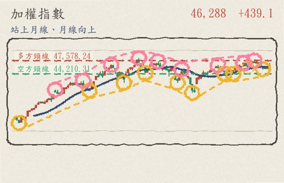
圖說：加權指數日 K（與個股圖相同標記）：黃圈＝轉折低點、粉圈＝轉折高點、虛線小圈＝還沒確認的轉折、藍線＝月線 MA20、水平虛線＝多方／空方頸線。最後一根是資料日當天。
本區塊為公開資料的技術面觀察，不構成投資建議，
不報牌、不預測、不下買賣決策。成交金額為集中市場總成交金額（含 ETF／權證），
與頁首摘要的「上市個股成交金額」口徑不同。標籤是統計，不是評分、也不是推薦。
籌碼趨勢（近 20 個交易日） 資料日 2026-08-21 ~ 2026-09-17
資料源與當日籌碼表完全相同（T86 三大法人全市場合計、MI_MARGN 上市融資），
只是逐日回補：這兩個端點都吃日期參數，所以可以畫趨勢，不是只能拿當日。
上圖：外資／投信／自營商買賣超（正＝買超、負＝賣超，單位張）；下圖：上市融資餘額（張）。
抓不到的交易日直接省略（不用前值替代），本圖為 20 個交易日。
上市 vs 上櫃（同期快篩）
加權 +0.96% vs 櫃買 -0.26%（方向相反，大小型股背離） → 方向相反（大小型股背離）
（兩個市場分開寫，不合併成一個數字；櫃買為 TPEX 公開資料）
櫃買歷史：TPEX 逐日回補 130 根；來源：櫃買中心 www/zh-tw/indexInfo/sectinx（逐日，官方；OpenAPI tpex_index 只回當月）
（TPEX OpenAPI 只回當月，故逐日回補；歷史不足就不算該條均線並標「資料不足」，不用錯數字）
近 20 個交易日大盤狀態回溯（最新在上）（點開看逐日主狀態／量比／量價象限）
用同一支程式回算最近 20 個交易日（主狀態 S1~S8 與量比 20 皆為當日收盤當時的判定，
不是事後調整）；量比 20 未公布的日子寫「—」。
好條件最多的（前 10）
不好條件最多的（前 10）
好條件（8 項）：站上月線、月線向上、底底高、頭頭高、突破頸線、相對大盤強、攻擊量（量增＋上漲）、守住今日高檔（距今日高點 1% 內）。
不好條件（8 項）：跌破前低、今日下跌、相對大盤弱、在月線之下、量增下跌（出貨）、貼近今日低點（1% 內）、跌破昨日低點、月線下彎。
兩邊都是同一組日線資料＋盤中即時價算出來的「符合項目數」，只是把方向相反的條件分開數；
條件數不是評分或推薦，不構成投資建議。
盤中爆量（估量比 ≥ 1.5）（20 上市 12／上櫃 8）
今日疲弱（跌幅前 10）（10 上市 6／上櫃 4）
逐檔（50 檔，依盤中成交金額排序）
聯電 2303 上市
147.5 +5.5（+3.87%）
上升趨勢（底底高＋頭頭高） 盤中成交值 311.6 億・全榜第 1 名（上市第 1 名）・相對大盤 +2.53
好條件 7/8：站上月線、月線向上、底底高、頭頭高、突破頸線、相對大盤強、攻擊量（量增＋上漲）
不好條件 0/8：無
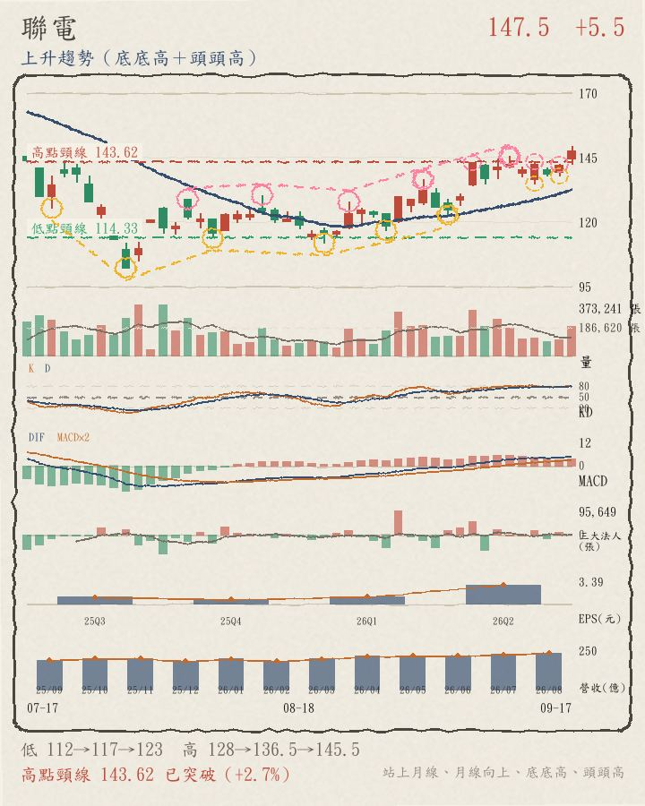
12:30 盤中 147.5（+3.87%），比加權指數強 2.53 個百分點、站上月線 131.125，已突破頸線 136.5，轉折結構仍是底底高＋頭頭高。
- 月線位置：現價 147.5 在月線 131.125 之上（+12.5%）；5 日線 141.2 也在月線之上（短均在上）；月線向上
- 量能：以已過交易時間推估，今天成交量約是 20 日均量的 1.60 倍（爆量），比 20 日均量大不少；上漲又量增，量價配合
- 關鍵價位：頸線 136.5 已站上；前一交易日高點 142.5（高於 3.5%）；今天盤中高點 149.5（低於 1.3%）；今天盤中低點 142.5（高於 3.5%）
- 轉折結構：低點 112、117、123 一路墊高、高點 128、136.5、145.5 也一路墊高，是底底高＋頭頭高；還沒確認的轉折低點 09-14 135、09-16 138；還沒確認的轉折高點 09-14 143.5、09-16 142.5（圖上虛線小圈）
台積電 2330 上市
2430 +50.0（+2.10%）
底部墊高、未過前高 盤中成交值 274.3 億・全榜第 2 名（上市第 2 名）・相對大盤 +0.76
好條件 5/8：站上月線、月線向上、底底高、相對大盤強、守住今日高檔（距今日高點 1% 內）
不好條件 0/8：無
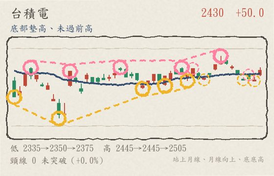
12:30 盤中 2430（+2.10%），比加權指數強 0.76 個百分點、站上月線 2411.75，離頸線 2445 還差 0.6%，底部還在墊高（但高點沒同步創高）。
- 月線位置：現價 2430 在月線 2411.75 之上（+0.8%）；5 日線 2401 也在月線之下（短均在下）；月線向上
- 量能：以已過交易時間推估，今天成交量約是 20 日均量的 0.84 倍（量平），比 20 日均量少很多；上漲但量縮，量價背離
- 關鍵價位：頸線 2445 還沒突破，差 0.6%；前一交易日高點 2395（高於 1.5%）；今天盤中高點 2445（低於 0.6%）；今天盤中低點 2400（高於 1.2%）
- 轉折結構：低點 2335、2350、2375 墊高（底底高），但高點 2445、2445、2505 沒有同步創高；還沒確認的轉折低點 09-14 2380、09-16 2375；還沒確認的轉折高點 09-08 2505、09-15 2405（圖上虛線小圈）
台燿 6274 上櫃
1335 -80.0（-5.65%）
區間或轉弱 盤中成交值 262.38 億・全榜第 3 名（上櫃第 1 名）・相對大盤 -6.99
好條件 0/8：無
不好條件 6/8：今日下跌、相對大盤弱、在月線之下、量增下跌（出貨）、跌破昨日低點、月線下彎
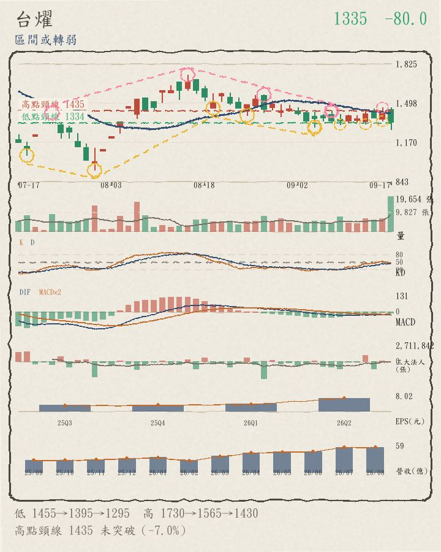
12:30 盤中 1335（-5.65%），比加權指數弱 6.99 個百分點、跌破月線 1424.75，離頸線 1565 還差 14.7%，轉折還沒走出明顯方向。
- 月線位置：現價 1335 在月線 1424.75 之下（-6.3%）；5 日線 1391 也在月線之下（短均在下）；月線向下
- 量能：以已過交易時間推估，今天成交量約是 20 日均量的 4.62 倍（爆量），比 20 日均量大不少；下跌卻量增，量價背離
- 關鍵價位：頸線 1565 還沒突破，差 14.7%；前一交易日高點 1460（低於 8.6%）；今天盤中高點 1460（低於 8.6%）；今天盤中低點 1275（高於 4.7%）
- 轉折結構：低點 1455、1395、1295 與高點 1730、1565、1430 都沒有明顯遞增，屬於區間震盪或轉弱；還沒確認的轉折低點 09-14 1320、09-16 1345；還沒確認的轉折高點 09-08 1430、09-16 1460（圖上虛線小圈）
聯發科 2454 上市
4570 +40.0（+0.88%）
高點墊高、底部不穩 盤中成交值 202.91 億・全榜第 4 名（上市第 3 名）・相對大盤 -0.46
好條件 4/8：站上月線、月線向上、頭頭高、突破頸線
不好條件 2/8：相對大盤弱、貼近今日低點（1% 內）
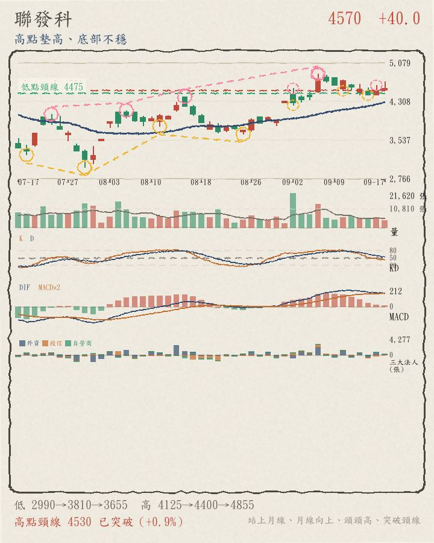
12:30 盤中 4570（+0.88%），比加權指數弱 0.46 個百分點、站上月線 4248.75，已突破頸線 4400，高點還在墊高（但底部沒同步墊高）。
- 月線位置：現價 4570 在月線 4248.75 之上（+7.6%）；5 日線 4565 也在月線之上（短均在上）；月線向上
- 量能：以已過交易時間推估，今天成交量約是 20 日均量的 0.79 倍（量平），比 20 日均量少很多；上漲但量縮，量價背離
- 關鍵價位：頸線 4400 已站上；前一交易日高點 4625（低於 1.2%）；今天盤中高點 4700（低於 2.8%）；今天盤中低點 4560（高於 0.2%）
- 轉折結構：高點 4125、4400、4855 墊高（頭頭高），但低點 2990、3810、3655 沒有同步墊高；還沒確認的轉折低點 09-10 4520、09-15 4430；還沒確認的轉折高點 09-07 4855、09-16 4625（圖上虛線小圈）
台光電 2383 上市
4755 -330.0（-6.49%）
區間或轉弱 盤中成交值 199.19 億・全榜第 5 名（上市第 4 名）・相對大盤 -7.83
好條件 0/8：無
不好條件 7/8：跌破前低、今日下跌、相對大盤弱、在月線之下、量增下跌（出貨）、跌破昨日低點、月線下彎
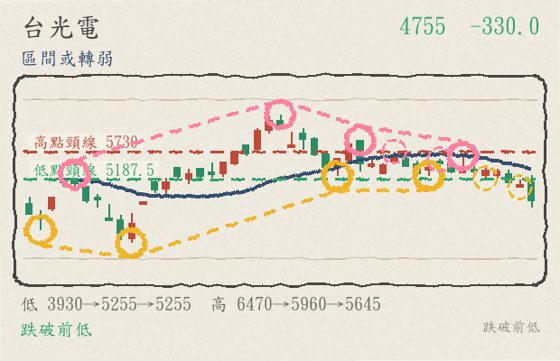
12:30 盤中 4755（-6.49%），比加權指數弱 7.83 個百分點、跌破月線 5467.25，離頸線 5960 還差 20.2%，轉折還沒走出明顯方向。
- 月線位置：現價 4755 在月線 5467.25 之下（-13.0%）；5 日線 5257 也在月線之下（短均在下）；月線向下
- 量能：以已過交易時間推估，今天成交量約是 20 日均量的 3.12 倍（爆量），比 20 日均量大不少；下跌卻量增，量價背離
- 關鍵價位：已跌破前一個轉折低點；頸線 5960 還在現價上方 20.2%；前一交易日高點 5175（低於 8.1%）；今天盤中高點 5255（低於 9.5%）；今天盤中低點 4635（高於 2.6%）
- 轉折結構：低點 3930、5255、5255 與高點 6470、5960、5645 都沒有明顯遞增，屬於區間震盪或轉弱；還沒確認的轉折低點 09-11 5210、09-16 5030；還沒確認的轉折高點 09-07 5580、09-09 5645（圖上虛線小圈）
南亞 1303 上市
237.5 +13.5（+6.03%）
底部墊高、未過前高 盤中成交值 193.24 億・全榜第 6 名（上市第 5 名）・相對大盤 +4.69
好條件 6/8：站上月線、月線向上、底底高、相對大盤強、攻擊量（量增＋上漲）、守住今日高檔（距今日高點 1% 內）
不好條件 0/8：無
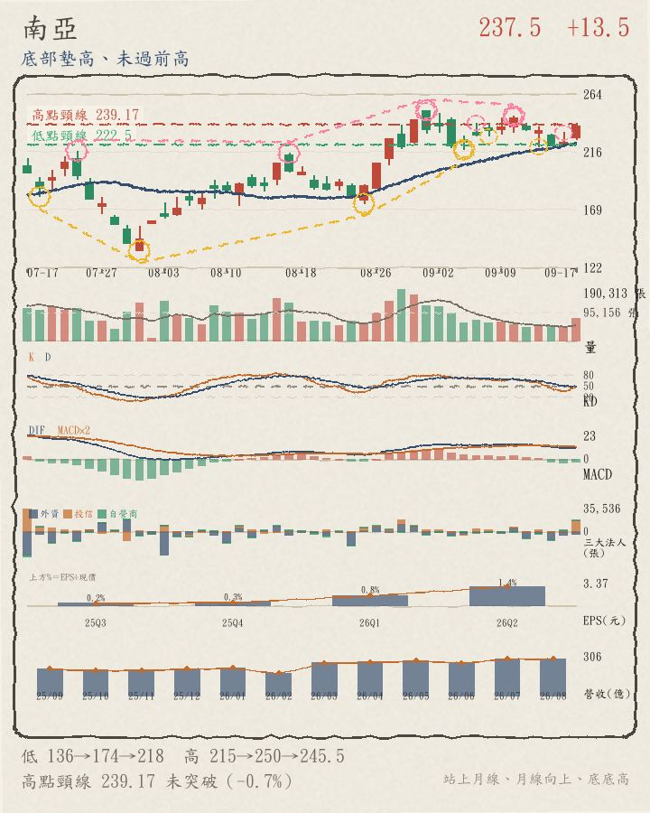
12:30 盤中 237.5（+6.03%），比加權指數強 4.69 個百分點、站上月線 221.125，離頸線 250 還差 5.0%，底部還在墊高（但高點沒同步創高）。
- 月線位置：現價 237.5 在月線 221.125 之上（+7.4%）；5 日線 231.6 也在月線之上（短均在上）；月線向上
- 量能：以已過交易時間推估，今天成交量約是 20 日均量的 1.17 倍（量增），比 20 日均量大不少；上漲又量增，量價配合
- 關鍵價位：頸線 250 還沒突破，差 5.0%；前一交易日高點 232（高於 2.4%）；今天盤中高點 239.5（低於 0.8%）；今天盤中低點 226.5（高於 4.9%）
- 轉折結構：低點 135.5、174、218 墊高（底底高），但高點 215、250、245.5 沒有同步創高；還沒確認的轉折低點 09-08 229、09-14 220.5；還沒確認的轉折高點 09-10 245.5、09-16 232（圖上虛線小圈）
穩懋 3105 上櫃
476 +3.5（+0.74%）
區間或轉弱 盤中成交值 191.21 億・全榜第 7 名（上櫃第 2 名）・相對大盤 -0.60
好條件 3/8：站上月線、月線向上、攻擊量（量增＋上漲）
不好條件 2/8：相對大盤弱、貼近今日低點（1% 內）
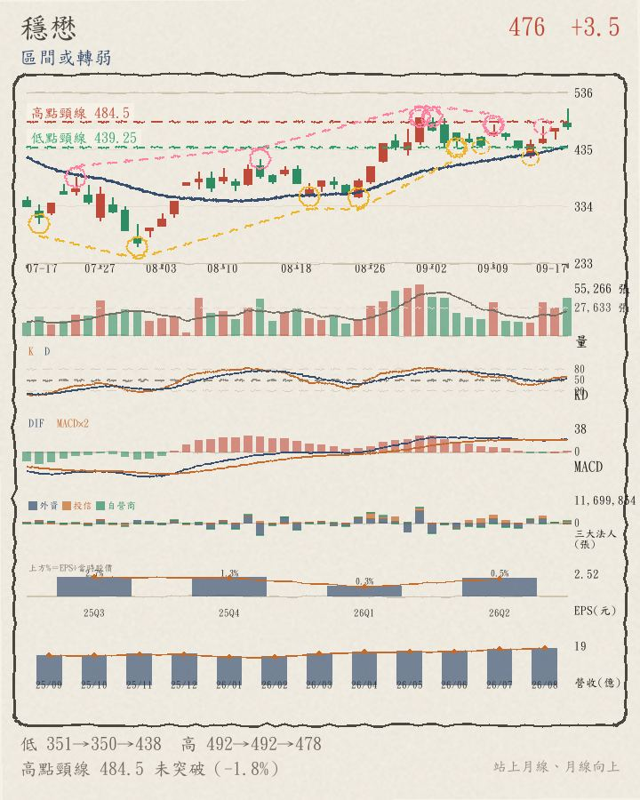
12:30 盤中 476（+0.74%），比加權指數弱 0.60 個百分點、站上月線 435.3，離頸線 492 還差 3.3%，轉折還沒走出明顯方向。
- 月線位置：現價 476 在月線 435.3 之上（+9.3%）；5 日線 453.9 也在月線之上（短均在上）；月線向上
- 量能：以已過交易時間推估，今天成交量約是 20 日均量的 1.83 倍（爆量），比 20 日均量大不少；上漲又量增，量價配合
- 關鍵價位：頸線 492 還沒突破，差 3.3%；前一交易日高點 473（高於 0.6%）；今天盤中高點 507（低於 6.1%）；今天盤中低點 471.5（高於 1.0%）
- 轉折結構：低點 351、349.5、438.5 與高點 492、492、478 都沒有明顯遞增，屬於區間震盪或轉弱；還沒確認的轉折低點 09-08 440、09-14 420；還沒確認的轉折高點 09-09 478、09-15 476（圖上虛線小圈）
南亞科 2408 上市
495.5 +3.0（+0.61%）
區間或轉弱 盤中成交值 177.89 億・全榜第 8 名（上市第 6 名）・相對大盤 -0.73
好條件 0/8：無
不好條件 3/8：相對大盤弱、在月線之下、月線下彎
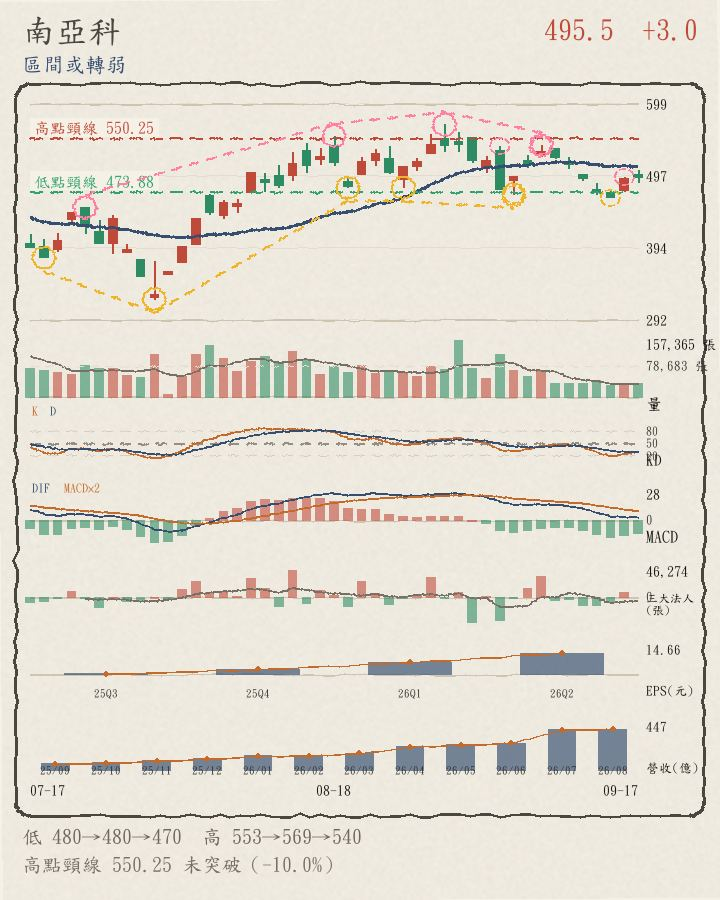
12:30 盤中 495.5（+0.61%），比加權指數弱 0.73 個百分點、跌破月線 510.825，離頸線 569 還差 12.9%，轉折還沒走出明顯方向。
- 月線位置：現價 495.5 在月線 510.825 之下（-3.0%）；5 日線 487.8 也在月線之下（短均在下）；月線向下
- 量能：以已過交易時間推估，今天成交量約是 20 日均量的 0.67 倍（量縮），比 20 日均量少很多；上漲但量縮，量價背離
- 關鍵價位：頸線 569 還沒突破，差 12.9%；前一交易日高點 495（高於 0.1%）；今天盤中高點 504（低於 1.7%）；今天盤中低點 488（高於 1.5%）
- 轉折結構：低點 480、480、470 與高點 553、569、540 都沒有明顯遞增，屬於區間震盪或轉弱；還沒確認的轉折低點 09-04 470、09-15 465.5；還沒確認的轉折高點 09-08 540、09-16 495（圖上虛線小圈）
量縮
↑ 回上方清單
華邦電 2344 上市
173 +4.0（+2.37%）
區間或轉弱 盤中成交值 168.38 億・全榜第 9 名（上市第 7 名）・相對大盤 +1.03
好條件 1/8：相對大盤強
不好條件 3/8：在月線之下、貼近今日低點（1% 內）、月線下彎
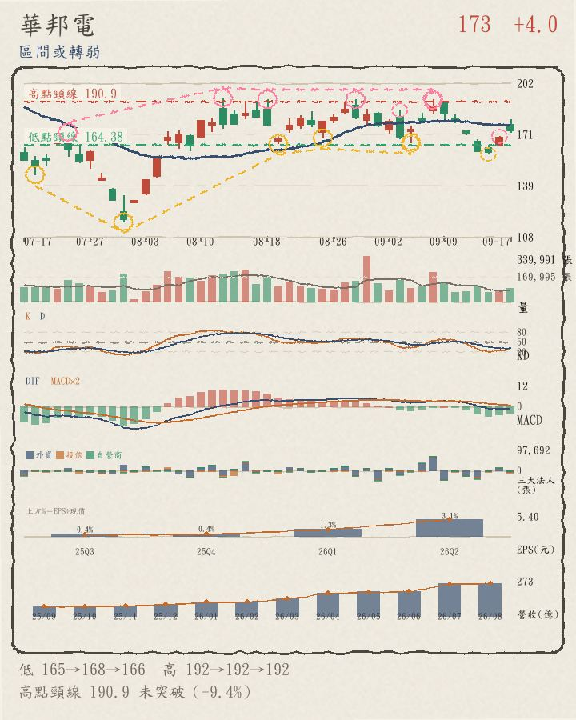
12:30 盤中 173（+2.37%），比加權指數強 1.03 個百分點、跌破月線 176.675，離頸線 192 還差 9.9%，轉折還沒走出明顯方向。
- 月線位置：現價 173 在月線 176.675 之下（-2.1%）；5 日線 167.9 也在月線之下（短均在下）；月線向下
- 量能：以已過交易時間推估，今天成交量約是 20 日均量的 0.98 倍（量平），跟 20 日均量差不多
- 關鍵價位：頸線 192 還沒突破，差 9.9%；前一交易日高點 169.5（高於 2.1%）；今天盤中高點 180（低於 3.9%）；今天盤中低點 172（高於 0.6%）
- 轉折結構：低點 165、168.5、165.5 與高點 192、192、192 都沒有明顯遞增，屬於區間震盪或轉弱；還沒確認的轉折低點 09-04 165.5、09-15 158.5；還沒確認的轉折高點 09-08 192、09-16 169.5（圖上虛線小圈）
量平
↑ 回上方清單
聯茂 6213 上市
495 -55.0（-10.00%）
區間或轉弱 盤中成交值 159.86 億・全榜第 10 名（上市第 8 名）・相對大盤 -11.34
好條件 1/8：月線向上
不好條件 5/8：今日下跌、相對大盤弱、在月線之下、量增下跌（出貨）、跌破昨日低點
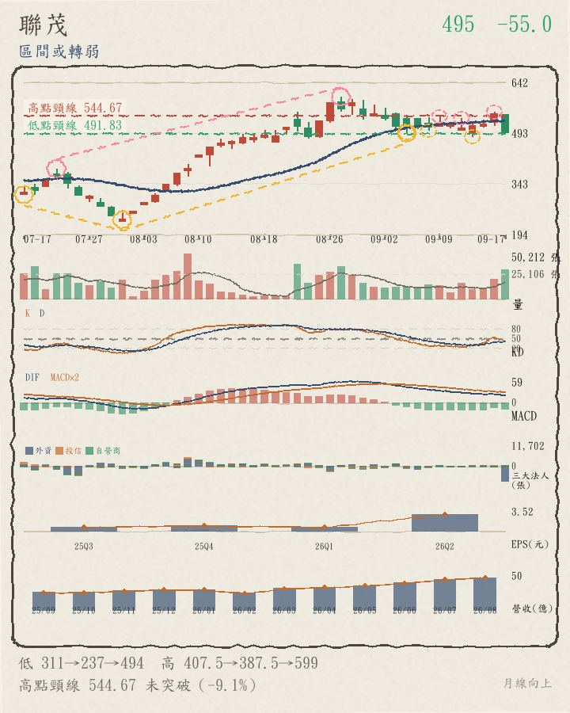
12:30 盤中 495（-10.00%），比加權指數弱 11.34 個百分點、跌破月線 529.225，離頸線 599 還差 17.4%，轉折還沒走出明顯方向。
- 月線位置：現價 495 在月線 529.225 之下（-6.5%）；5 日線 522.4 也在月線之下（短均在下）；月線向上
- 量能：以已過交易時間推估，今天成交量約是 20 日均量的 2.48 倍（爆量），比 20 日均量大不少；下跌卻量增，量價背離
- 關鍵價位：頸線 599 還沒突破，差 17.4%；前一交易日高點 555（低於 10.8%）；今天盤中高點 548（低於 9.7%）；今天盤中低點 495（高於 0.0%）
- 轉折結構：低點 311、237、493.5 與高點 407.5、387.5、599 都沒有明顯遞增，屬於區間震盪或轉弱；還沒確認的轉折低點 09-08 500、09-14 482；還沒確認的轉折高點 09-11 537、09-16 555（圖上虛線小圈）
全新 2455 上市
520 +5.0（+0.97%）
底部墊高、未過前高 盤中成交值 130.83 億・全榜第 11 名（上市第 9 名）・相對大盤 -0.37
好條件 4/8：站上月線、月線向上、底底高、攻擊量（量增＋上漲）
不好條件 2/8：相對大盤弱、貼近今日低點（1% 內）
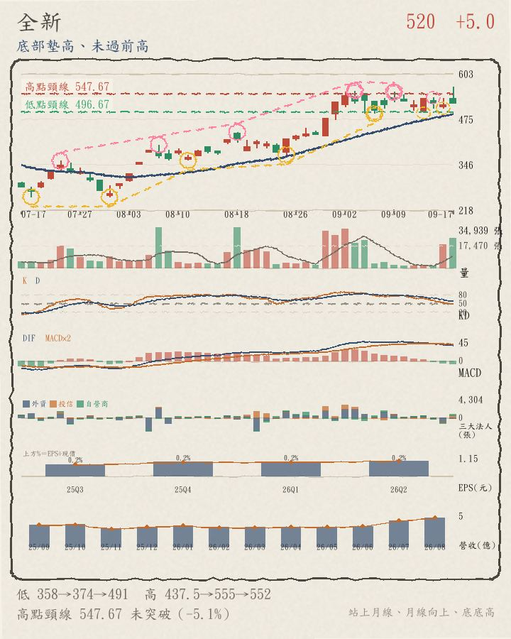
12:30 盤中 520（+0.97%），比加權指數弱 0.37 個百分點、站上月線 483.75，離頸線 555 還差 6.3%，底部還在墊高（但高點沒同步創高）。
- 月線位置：現價 520 在月線 483.75 之上（+7.5%）；5 日線 523.4 也在月線之上（短均在上）；月線向上
- 量能：以已過交易時間推估，今天成交量約是 20 日均量的 2.98 倍（爆量），比 20 日均量大不少；上漲又量增，量價配合
- 關鍵價位：頸線 555 還沒突破，差 6.3%；前一交易日高點 534（低於 2.6%）；今天盤中高點 566（低於 8.1%）；今天盤中低點 519（高於 0.2%）
- 轉折結構：低點 358.5、374.5、491 墊高（底底高），但高點 437.5、555、552 沒有同步創高；還沒確認的轉折低點 09-14 493、09-16 506；還沒確認的轉折高點 09-09 552、09-15 536（圖上虛線小圈）
頎邦 6147 上櫃
208.5 +1.0（+0.48%）
區間或轉弱 盤中成交值 124.92 億・全榜第 12 名（上櫃第 3 名）・相對大盤 -0.86
好條件 4/8：站上月線、月線向上、突破頸線、攻擊量（量增＋上漲）
不好條件 1/8：相對大盤弱
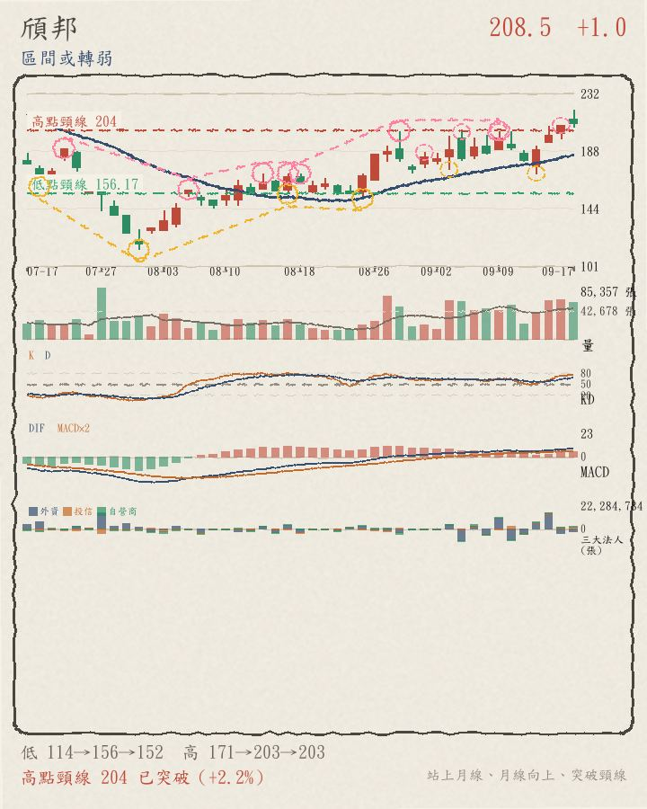
12:30 盤中 208.5（+0.48%），比加權指數弱 0.86 個百分點、站上月線 182.9，已突破頸線 171，轉折還沒走出明顯方向。
- 月線位置：現價 208.5 在月線 182.9 之上（+14.0%）；5 日線 193.6 也在月線之上（短均在上）；月線向上
- 量能：以已過交易時間推估，今天成交量約是 20 日均量的 2.04 倍（爆量），比 20 日均量大不少；上漲又量增，量價配合
- 關鍵價位：頸線 171 已站上；前一交易日高點 207.5（高於 0.5%）；今天盤中高點 219（低於 4.8%）；今天盤中低點 206（高於 1.2%）
- 轉折結構：低點 113.5、155.5、152 與高點 171、203、203 都沒有明顯遞增，屬於區間震盪或轉弱；還沒確認的轉折低點 09-03 174、09-14 171；還沒確認的轉折高點 09-09 203、09-16 207.5（圖上虛線小圈）
台達電 2308 上市
1705 -5.0（-0.29%）
底部墊高、未過前高 盤中成交值 123.37 億・全榜第 13 名（上市第 10 名）・相對大盤 -1.63
好條件 1/8：底底高
不好條件 6/8：跌破前低、今日下跌、相對大盤弱、在月線之下、貼近今日低點（1% 內）、月線下彎
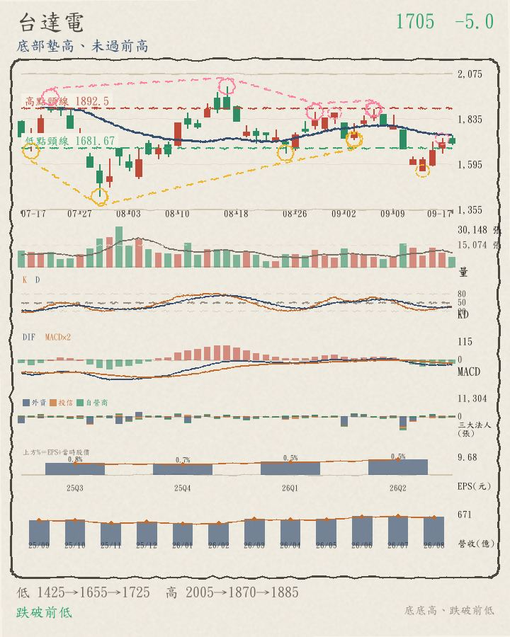
12:30 盤中 1705（-0.29%），比加權指數弱 1.63 個百分點、跌破月線 1752.75，離頸線 1870 還差 8.8%，底部還在墊高（但高點沒同步創高）。
- 月線位置：現價 1705 在月線 1752.75 之下（-2.7%）；5 日線 1659 也在月線之下（短均在下）；月線向下
- 量能：以已過交易時間推估，今天成交量約是 20 日均量的 0.99 倍（量平），跟 20 日均量差不多
- 關鍵價位：已跌破前一個轉折低點；頸線 1870 還在現價上方 8.8%；前一交易日高點 1730（低於 1.4%）；今天盤中高點 1745（低於 2.3%）；今天盤中低點 1700（高於 0.3%）
- 轉折結構：低點 1425、1655、1725 墊高（底底高），但高點 2005、1870、1885 沒有同步創高；還沒確認的轉折低點 09-03 1725、09-14 1560；還沒確認的轉折高點 09-07 1885、09-16 1730（圖上虛線小圈）
欣興 3037 上市
950 -11.0（-1.14%）
區間或轉弱 盤中成交值 120.89 億・全榜第 14 名（上市第 11 名）・相對大盤 -2.48
好條件 0/8：無
不好條件 5/8：今日下跌、相對大盤弱、在月線之下、貼近今日低點（1% 內）、月線下彎
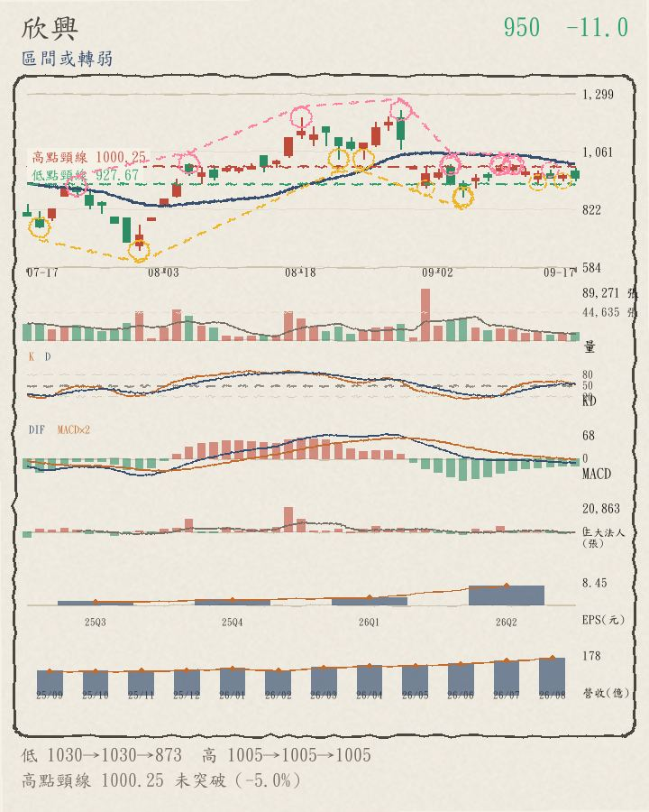
12:30 盤中 950（-1.14%），比加權指數弱 2.48 個百分點、跌破月線 1018.1，離頸線 1230 還差 22.8%，轉折還沒走出明顯方向。
- 月線位置：現價 950 在月線 1018.1 之下（-6.7%）；5 日線 970.6 也在月線之下（短均在下）；月線向下
- 量能：以已過交易時間推估，今天成交量約是 20 日均量的 0.71 倍（量平），比 20 日均量少很多
- 關鍵價位：頸線 1230 還沒突破，差 22.8%；前一交易日高點 971（低於 2.2%）；今天盤中高點 993（低於 4.3%）；今天盤中低點 941（高於 1.0%）
- 轉折結構：低點 1030、1030、873 與高點 1005、1005、1005 都沒有明顯遞增，屬於區間震盪或轉弱；還沒確認的轉折低點 09-14 932、09-16 940；還沒確認的轉折高點 09-10 1005、09-15 986（圖上虛線小圈）
量平
↑ 回上方清單
創意 3443 上市
6460 +290.0（+4.70%）
高點墊高、底部不穩 盤中成交值 118.67 億・全榜第 15 名（上市第 12 名）・相對大盤 +3.36
好條件 5/8：站上月線、月線向上、頭頭高、相對大盤強、攻擊量（量增＋上漲）
不好條件 0/8：無
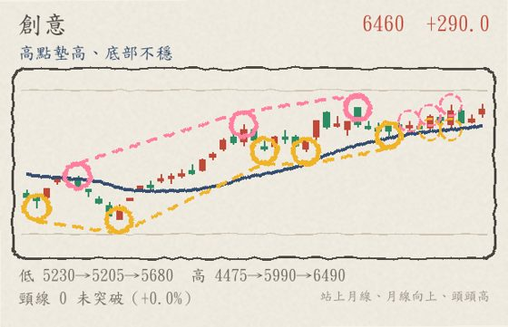
12:30 盤中 6460（+4.70%），比加權指數強 3.36 個百分點、站上月線 5929.75，離頸線 6490 還差 0.5%，高點還在墊高（但底部沒同步墊高）。
- 月線位置：現價 6460 在月線 5929.75 之上（+8.9%）；5 日線 6190 也在月線之上（短均在上）；月線向上
- 量能：以已過交易時間推估，今天成交量約是 20 日均量的 1.22 倍（量增），比 20 日均量大不少；上漲又量增，量價配合
- 關鍵價位：頸線 6490 還沒突破，差 0.5%；前一交易日高點 6295（高於 2.6%）；今天盤中高點 6610（低於 2.3%）；今天盤中低點 6205（高於 4.1%）
- 轉折結構：高點 4475、5990、6490 墊高（頭頭高），但低點 5230、5205、5680 沒有同步墊高；還沒確認的轉折低點 09-10 5850、09-14 5850；還沒確認的轉折高點 09-10 6275、09-14 6575（圖上虛線小圈）
金居 8358 上櫃
481.5 -28.5（-5.59%）
底部墊高、未過前高 盤中成交值 111.41 億・全榜第 16 名（上櫃第 4 名）・相對大盤 -6.93
好條件 2/8：月線向上、底底高
不好條件 6/8：今日下跌、相對大盤弱、在月線之下、量增下跌（出貨）、貼近今日低點（1% 內）、跌破昨日低點
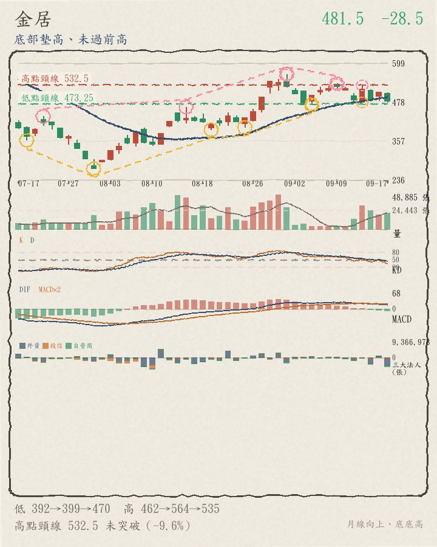
12:30 盤中 481.5（-5.59%），比加權指數弱 6.93 個百分點、跌破月線 489.9，離頸線 564 還差 14.6%，底部還在墊高（但高點沒同步創高）。
- 月線位置：現價 481.5 在月線 489.9 之下（-1.7%）；5 日線 503.2 也在月線之上（短均在上）；月線向上
- 量能：以已過交易時間推估，今天成交量約是 20 日均量的 1.56 倍（爆量），比 20 日均量大不少；下跌卻量增，量價背離
- 關鍵價位：頸線 564 還沒突破，差 14.6%；前一交易日高點 510（低於 5.6%）；今天盤中高點 507（低於 5.0%）；今天盤中低點 478（高於 0.7%）
- 轉折結構：低點 392、399、469.5 墊高（底底高），但高點 462、564、535 沒有同步創高；還沒確認的轉折低點 09-04 469.5、09-14 477；還沒確認的轉折高點 09-09 535、09-14 530（圖上虛線小圈）
金像電 2368 上市
968 -24.0（-2.42%）
底部墊高、未過前高 盤中成交值 105.75 億・全榜第 17 名（上市第 13 名）・相對大盤 -3.76
好條件 1/8：底底高
不好條件 6/8：跌破前低、今日下跌、相對大盤弱、在月線之下、量增下跌（出貨）、月線下彎
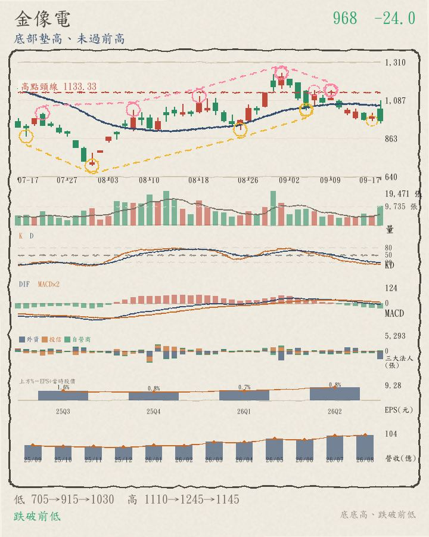
12:30 盤中 968（-2.42%），比加權指數弱 3.76 個百分點、跌破月線 1058.65，離頸線 1245 還差 22.2%，底部還在墊高（但高點沒同步創高）。
- 月線位置：現價 968 在月線 1058.65 之下（-8.6%）；5 日線 1011.8 也在月線之下（短均在下）；月線向下
- 量能：以已過交易時間推估，今天成交量約是 20 日均量的 1.85 倍（爆量），比 20 日均量大不少；下跌卻量增，量價背離
- 關鍵價位：已跌破前一個轉折低點；頸線 1245 還在現價上方 22.2%；前一交易日高點 1010（低於 4.2%）；今天盤中高點 1085（低於 10.8%）；今天盤中低點 952（高於 1.7%）
- 轉折結構：低點 705、915、1030 墊高（底底高），但高點 1110、1245、1145 沒有同步創高；還沒確認的轉折低點 09-04 1030、09-16 966；還沒確認的轉折高點 09-07 1145、09-09 1145（圖上虛線小圈）
大立光 3008 上市
6125 -100.0（-1.61%）
上升趨勢（底底高＋頭頭高） 盤中成交值 96.41 億・全榜第 18 名（上市第 14 名）・相對大盤 -2.95
好條件 3/8：月線向上、底底高、頭頭高
不好條件 5/8：跌破前低、今日下跌、相對大盤弱、在月線之下、跌破昨日低點
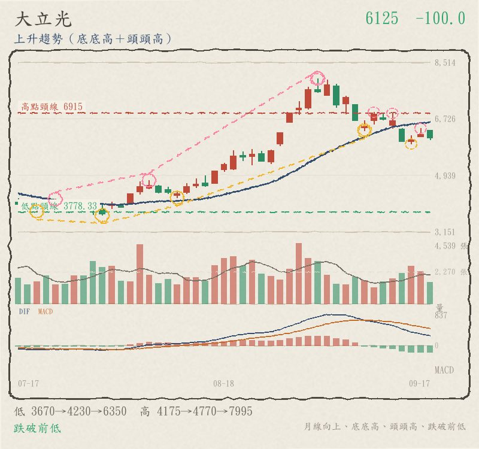
12:30 盤中 6125（-1.61%），比加權指數弱 2.95 個百分點、跌破月線 6588.75，離頸線 7995 還差 23.4%，轉折結構仍是底底高＋頭頭高。
- 月線位置：現價 6125 在月線 6588.75 之下（-7.0%）；5 日線 6331 也在月線之下（短均在下）；月線向上
- 量能：以已過交易時間推估，今天成交量約是 20 日均量的 0.84 倍（量平），比 20 日均量少很多
- 關鍵價位：已跌破前一個轉折低點；頸線 7995 還在現價上方 23.4%；前一交易日高點 6415（低於 4.5%）；今天盤中高點 6370（低於 3.8%）；今天盤中低點 6055（高於 1.2%）
- 轉折結構：低點 3670、4230、6350 一路墊高、高點 4175、4770、7995 也一路墊高，是底底高＋頭頭高；還沒確認的轉折低點 09-08 6350、09-15 5930；還沒確認的轉折高點 09-11 6900、09-16 6415（圖上虛線小圈）
景碩 3189 上市
801 -19.0（-2.32%）
區間或轉弱 盤中成交值 94.89 億・全榜第 19 名（上市第 15 名）・相對大盤 -3.66
好條件 0/8：無
不好條件 4/8：今日下跌、相對大盤弱、在月線之下、月線下彎
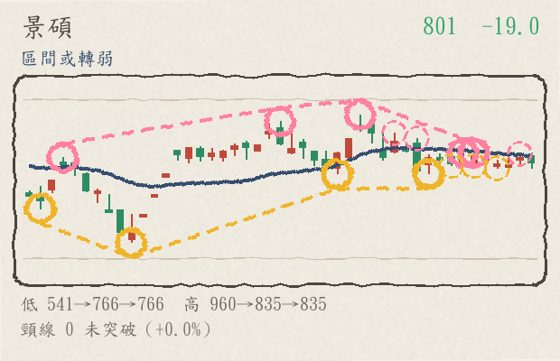
12:30 盤中 801（-2.32%），比加權指數弱 3.66 個百分點、跌破月線 830.3，離頸線 960 還差 16.6%，轉折還沒走出明顯方向。
- 月線位置：現價 801 在月線 830.3 之下（-3.5%）；5 日線 812.4 也在月線之下（短均在下）；月線向下
- 量能：以已過交易時間推估，今天成交量約是 20 日均量的 0.85 倍（量平），比 20 日均量少一些
- 關鍵價位：頸線 960 還沒突破，差 16.6%；前一交易日高點 832（低於 3.7%）；今天盤中高點 835（低於 4.1%）；今天盤中低點 785（高於 2.0%）
- 轉折結構：低點 541、766、766 與高點 960、835、835 都沒有明顯遞增，屬於區間震盪或轉弱；還沒確認的轉折低點 09-10 792、09-14 784；還沒確認的轉折高點 09-10 835、09-16 832（圖上虛線小圈）
量平
↑ 回上方清單
臻鼎-KY 4958 上市
479 -14.5（-2.94%）
上升趨勢（底底高＋頭頭高） 盤中成交值 91.61 億・全榜第 20 名（上市第 16 名）・相對大盤 -4.28
好條件 3/8：月線向上、底底高、頭頭高
不好條件 4/8：今日下跌、相對大盤弱、在月線之下、貼近今日低點（1% 內）
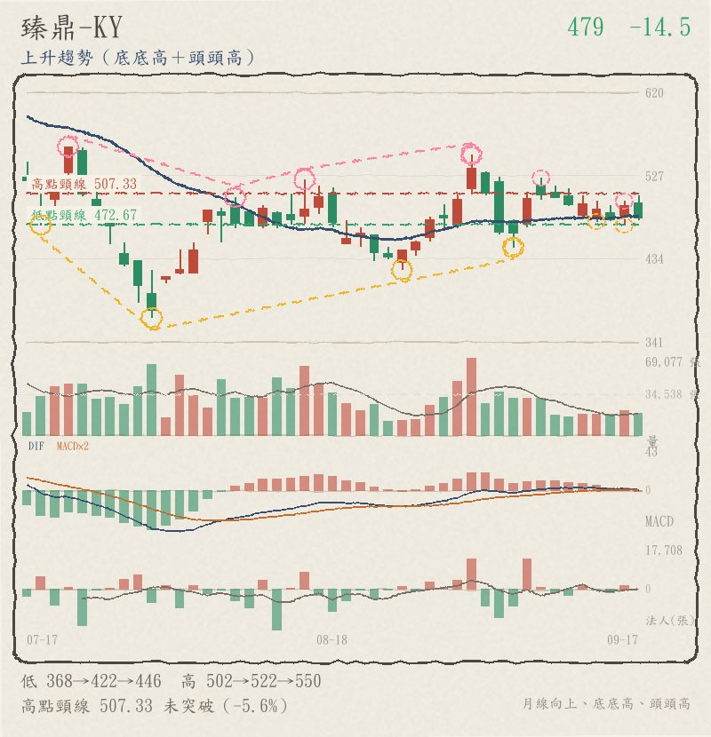
12:30 盤中 479（-2.94%），比加權指數弱 4.28 個百分點、跌破月線 481.05，離頸線 550 還差 12.9%，轉折結構仍是底底高＋頭頭高。
- 月線位置：現價 479 在月線 481.05 之下（-0.4%）；5 日線 490 也在月線之上（短均在上）；月線向上
- 量能：以已過交易時間推估，今天成交量約是 20 日均量的 0.89 倍（量平），比 20 日均量少一些
- 關鍵價位：頸線 550 還沒突破，差 12.9%；前一交易日高點 498（低於 3.8%）；今天盤中高點 504（低於 5.0%）；今天盤中低點 477（高於 0.4%）
- 轉折結構：低點 368、421.5、446.5 一路墊高、高點 502、522、550 也一路墊高，是底底高＋頭頭高；還沒確認的轉折低點 09-14 475.5、09-16 471；還沒確認的轉折高點 09-08 524、09-16 498（圖上虛線小圈）
聯亞 3081 上櫃
2740 -65.0（-2.32%）
高點墊高、底部不穩 盤中成交值 88.89 億・全榜第 21 名（上櫃第 5 名）・相對大盤 -3.66
好條件 3/8：月線向上、頭頭高、突破頸線
不好條件 4/8：今日下跌、相對大盤弱、在月線之下、貼近今日低點（1% 內）
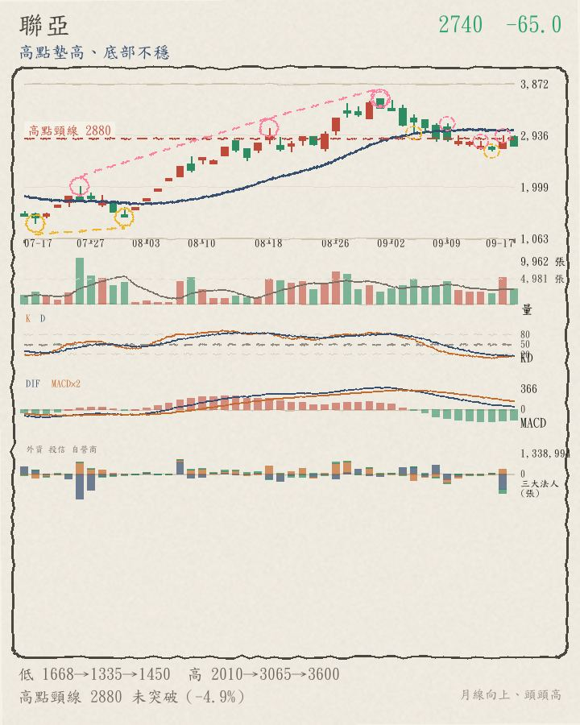
12:30 盤中 2740（-2.32%），比加權指數弱 3.66 個百分點、跌破月線 3032.25，已突破頸線 2010，高點還在墊高（但底部沒同步墊高）。
- 月線位置：現價 2740 在月線 3032.25 之下（-9.6%）；5 日線 2773 也在月線之下（短均在下）；月線向上
- 量能：以已過交易時間推估，今天成交量約是 20 日均量的 1.05 倍（量平），比 20 日均量大一些
- 關鍵價位：頸線 2010 已站上；前一交易日高點 2930（低於 6.5%）；今天盤中高點 2930（低於 6.5%）；今天盤中低點 2735（高於 0.2%）
- 轉折結構：高點 2010、3065、3600 墊高（頭頭高），但低點 1668.18、1335、1450 沒有同步墊高；還沒確認的轉折低點 09-04 2980、09-15 2650；還沒確認的轉折高點 09-14 2830、09-16 2930（圖上虛線小圈）
友達 2409 上市
30 +0.6（+2.04%）
區間或轉弱 盤中成交值 87.5 億・全榜第 22 名（上市第 17 名）・相對大盤 +0.70
好條件 4/8：站上月線、月線向上、相對大盤強、攻擊量（量增＋上漲）
不好條件 0/8：無
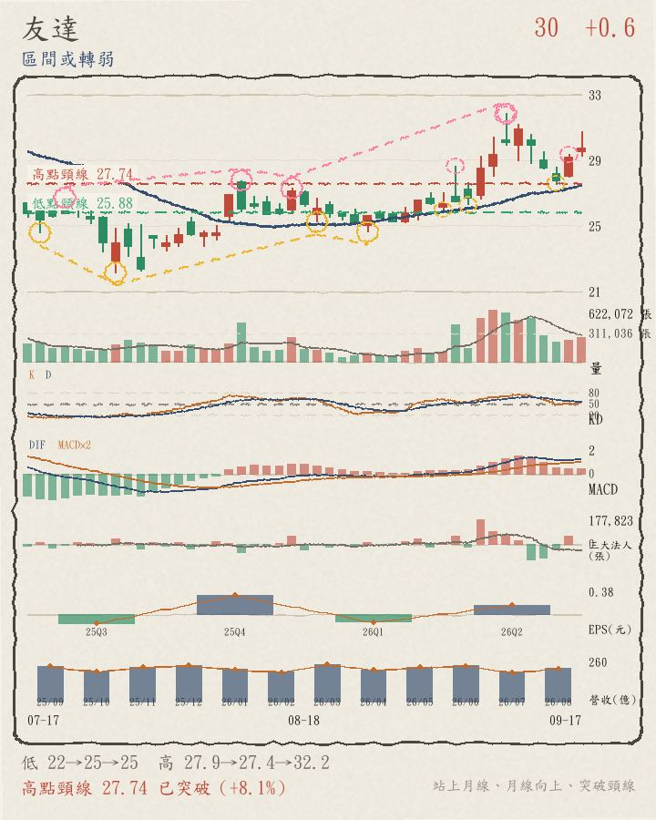
12:30 盤中 30（+2.04%），比加權指數強 0.70 個百分點、站上月線 27.395，離頸線 32.2 還差 6.8%，轉折還沒走出明顯方向。
- 月線位置：現價 30 在月線 27.395 之上（+9.5%）；5 日線 29.48 也在月線之上（短均在上）；月線向上
- 量能：以已過交易時間推估，今天成交量約是 20 日均量的 1.50 倍（爆量），比 20 日均量大不少；上漲又量增，量價配合
- 關鍵價位：頸線 32.2 還沒突破，差 6.8%；前一交易日高點 29.6（高於 1.4%）；今天盤中高點 31.05（低於 3.4%）；今天盤中低點 29.5（高於 1.7%）
- 轉折結構：低點 22、25.25、24.6 與高點 27.9、27.4、32.2 都沒有明顯遞增，屬於區間震盪或轉弱；還沒確認的轉折低點 09-04 26.35、09-15 27.75；還沒確認的轉折高點 09-09 32.2、09-16 29.6（圖上虛線小圈）
強茂 2481 上市
162 -6.5（-3.86%）
高點墊高、底部不穩 盤中成交值 87.48 億・全榜第 23 名（上市第 18 名）・相對大盤 -5.20
好條件 4/8：站上月線、月線向上、頭頭高、突破頸線
不好條件 4/8：今日下跌、相對大盤弱、量增下跌（出貨）、貼近今日低點（1% 內）
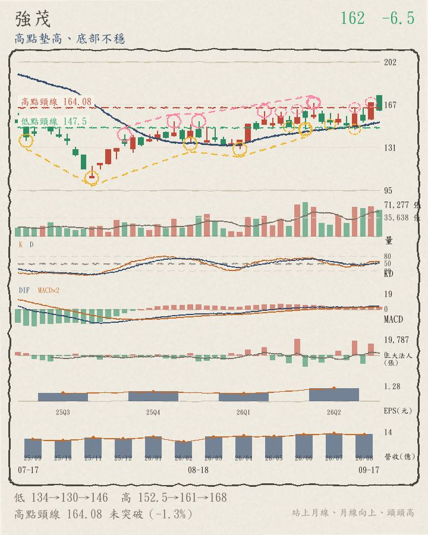
12:30 盤中 162（-3.86%），比加權指數弱 5.20 個百分點、站上月線 150.475，已突破頸線 161，高點還在墊高（但底部沒同步墊高）。
- 月線位置：現價 162 在月線 150.475 之上（+7.7%）；5 日線 157.1 也在月線之上（短均在上）；月線向上
- 量能：以已過交易時間推估，今天成交量約是 20 日均量的 1.86 倍（爆量），比 20 日均量大不少；下跌卻量增，量價背離
- 關鍵價位：頸線 161 已站上；前一交易日高點 168.5（低於 3.9%）；今天盤中高點 174（低於 6.9%）；今天盤中低點 161.5（高於 0.3%）
- 轉折結構：高點 152.5、161、168 墊高（頭頭高），但低點 134、129.5、146 沒有同步墊高；還沒確認的轉折低點 09-09 150、09-14 146；還沒確認的轉折高點 09-14 164、09-16 168.5（圖上虛線小圈）
玉晶光 3406 上市
966 -39.0（-3.88%）
上升趨勢（底底高＋頭頭高） 盤中成交值 86.2 億・全榜第 24 名（上市第 19 名）・相對大盤 -5.22
好條件 4/8：站上月線、月線向上、底底高、頭頭高
不好條件 3/8：今日下跌、相對大盤弱、量增下跌（出貨）
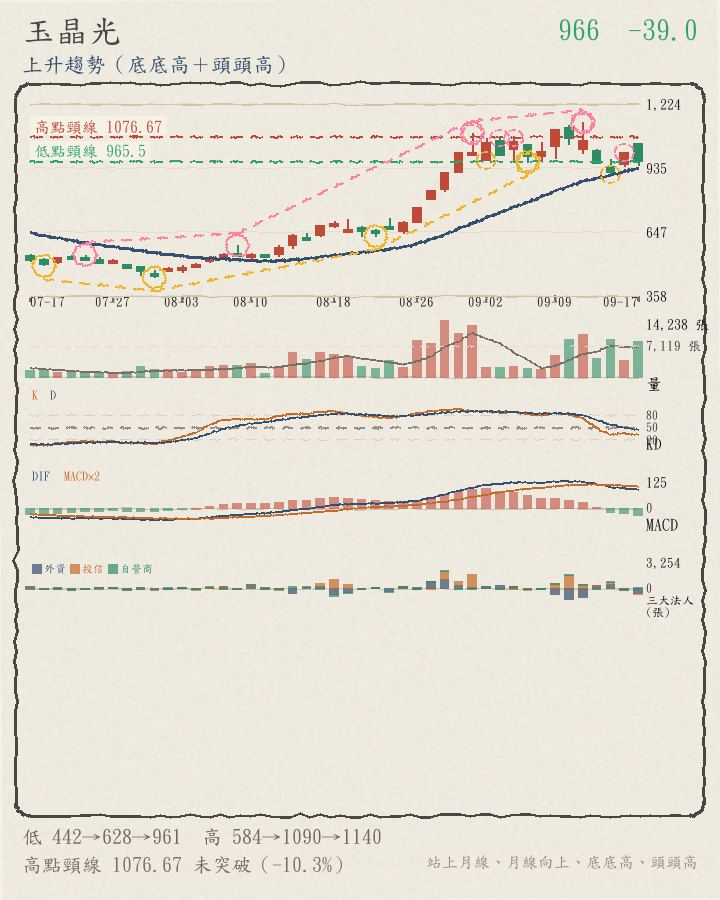
12:30 盤中 966（-3.88%），比加權指數弱 5.22 個百分點、站上月線 918.8，離頸線 1090 還差 11.4%，轉折結構仍是底底高＋頭頭高。
- 月線位置：現價 966 在月線 918.8 之上（+5.1%）；5 日線 1000.8 也在月線之上（短均在上）；月線向上
- 量能：以已過交易時間推估，今天成交量約是 20 日均量的 1.87 倍（爆量），比 20 日均量大不少；下跌卻量增，量價背離
- 關鍵價位：頸線 1090 還沒突破，差 11.4%；前一交易日高點 1005（低於 3.9%）；今天盤中高點 1045（低於 7.6%）；今天盤中低點 947（高於 2.0%）
- 轉折結構：低點 442、628、961 一路墊高、高點 584、1090、1140 也一路墊高，是底底高＋頭頭高；還沒確認的轉折低點 09-07 961、09-15 906；還沒確認的轉折高點 09-11 1140、09-16 1005（圖上虛線小圈）
國巨* 2327 上市
536 +0.0（+0.00%）
區間或轉弱 盤中成交值 84.43 億・全榜第 25 名（上市第 20 名）・相對大盤 -1.34
好條件 0/8：無
不好條件 4/8：相對大盤弱、在月線之下、貼近今日低點（1% 內）、月線下彎
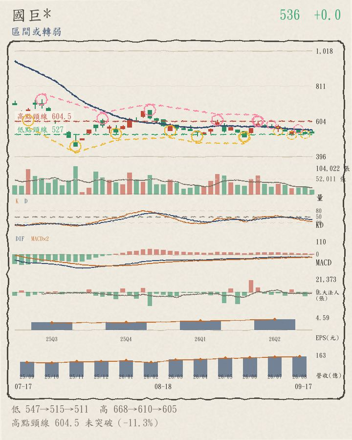
12:30 盤中 536（+0.00%），比加權指數弱 1.34 個百分點、跌破月線 554.05，離頸線 610 還差 12.1%，轉折還沒走出明顯方向。
- 月線位置：現價 536 在月線 554.05 之下（-3.3%）；5 日線 546.8 也在月線之下（短均在下）；月線向下
- 量能：以已過交易時間推估，今天成交量約是 20 日均量的 0.51 倍（量縮），比 20 日均量少很多
- 關鍵價位：頸線 610 還沒突破，差 12.1%；前一交易日高點 543（低於 1.3%）；今天盤中高點 553（低於 3.1%）；今天盤中低點 534（高於 0.4%）
- 轉折結構：低點 547、515、511 與高點 668、610、605 都沒有明顯遞增，屬於區間震盪或轉弱；還沒確認的轉折低點 09-14 520、09-16 526；還沒確認的轉折高點 09-09 585、09-15 558（圖上虛線小圈）
量縮
↑ 回上方清單
禾伸堂 3026 上市
772 +0.0（+0.00%）
高點墊高、底部不穩 盤中成交值 80.93 億・全榜第 26 名（上市第 21 名）・相對大盤 -1.34
好條件 3/8：站上月線、月線向上、頭頭高
不好條件 2/8：相對大盤弱、貼近今日低點（1% 內）
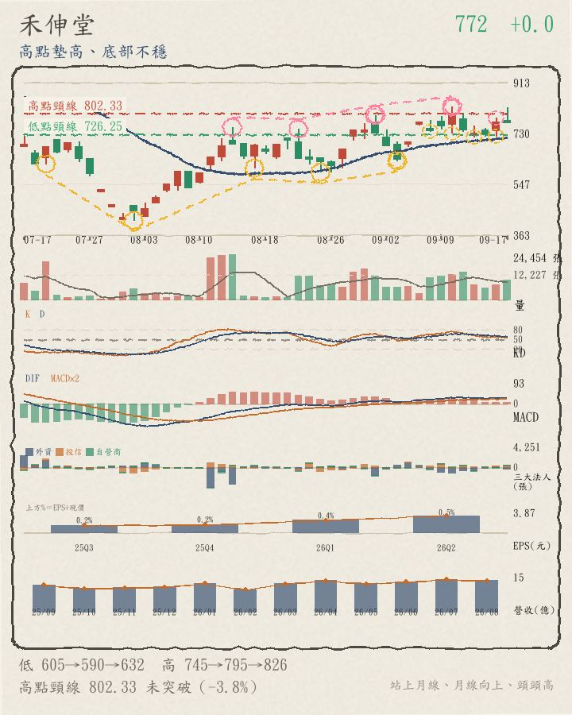
12:30 盤中 772（+0.00%），比加權指數弱 1.34 個百分點、站上月線 710.05，離頸線 795 還差 2.9%，高點還在墊高（但底部沒同步墊高）。
- 月線位置：現價 772 在月線 710.05 之上（+8.7%）；5 日線 755.2 也在月線之上（短均在上）；月線向上
- 量能：以已過交易時間推估，今天成交量約是 20 日均量的 1.45 倍（量增），比 20 日均量大不少
- 關鍵價位：頸線 795 還沒突破，差 2.9%；前一交易日高點 786（低於 1.8%）；今天盤中高點 822（低於 6.1%）；今天盤中低點 771（高於 0.1%）
- 轉折結構：高點 745、795、826 墊高（頭頭高），但低點 605、590、632 沒有同步墊高；還沒確認的轉折低點 09-14 717、09-16 720；還沒確認的轉折高點 09-10 826、09-16 786（圖上虛線小圈）
世芯-KY 3661 上市
3300 -45.0（-1.35%）
區間或轉弱 盤中成交值 77.81 億・全榜第 27 名（上市第 22 名）・相對大盤 -2.69
好條件 0/8：無
不好條件 7/8：跌破前低、今日下跌、相對大盤弱、在月線之下、量增下跌（出貨）、跌破昨日低點、月線下彎
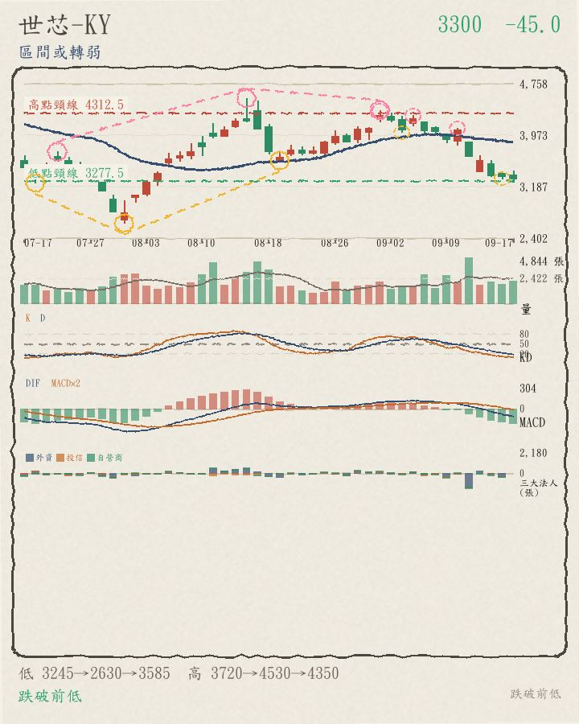
12:30 盤中 3300（-1.35%），比加權指數弱 2.69 個百分點、跌破月線 3886.75，離頸線 4530 還差 27.2%，轉折還沒走出明顯方向。
- 月線位置：現價 3300 在月線 3886.75 之下（-15.1%）；5 日線 3599 也在月線之下（短均在下）；月線向下
- 量能：以已過交易時間推估，今天成交量約是 20 日均量的 1.51 倍（爆量），比 20 日均量大不少；下跌卻量增，量價背離
- 關鍵價位：已跌破前一個轉折低點；頸線 4530 還在現價上方 27.2%；前一交易日高點 3400（低於 2.9%）；今天盤中高點 3430（低於 3.8%）；今天盤中低點 3260（高於 1.2%）
- 轉折結構：低點 3245、2630、3585 與高點 3720、4530、4350 都沒有明顯遞增，屬於區間震盪或轉弱；還沒確認的轉折低點 09-03 4010、09-16 3310；還沒確認的轉折高點 09-04 4275、09-10 4075（圖上虛線小圈）
緯穎 6669 上市
2155 -10.0（-0.46%）
上升趨勢（底底高＋頭頭高） 盤中成交值 75.45 億・全榜第 28 名（上市第 23 名）・相對大盤 -1.80
好條件 3/8：月線向上、底底高、頭頭高
不好條件 4/8：今日下跌、相對大盤弱、在月線之下、貼近今日低點（1% 內）
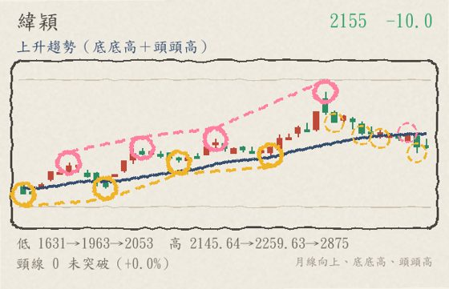
12:30 盤中 2155（-0.46%），比加權指數弱 1.80 個百分點、跌破月線 2333.28，離頸線 2259.63 還差 4.6%，轉折結構仍是底底高＋頭頭高。
- 月線位置：現價 2155 在月線 2333.28 之下（-7.6%）；5 日線 2281 也在月線之下（短均在下）；月線向上
- 量能：以已過交易時間推估，今天成交量約是 20 日均量的 1.15 倍（量增），比 20 日均量大不少；下跌卻量增，量價背離
- 關鍵價位：頸線 2259.63 還沒突破，差 4.6%；前一交易日高點 2320（低於 7.1%）；今天盤中高點 2260（低於 4.6%）；今天盤中低點 2140（高於 0.7%）
- 轉折結構：低點 1631.02、1962.92、2053.44 一路墊高、高點 2145.64、2259.63、2875 也一路墊高，是底底高＋頭頭高；還沒確認的轉折低點 09-10 2270、09-16 2085；還沒確認的轉折高點 09-02 2875、09-15 2345（圖上虛線小圈）
聯一光 3441 上櫃
190.5 +4.5（+2.42%）
上升趨勢（底底高＋頭頭高） 盤中成交值 74.51 億・全榜第 29 名（上櫃第 6 名）・相對大盤 +1.08
好條件 7/8：站上月線、月線向上、底底高、頭頭高、突破頸線、相對大盤強、攻擊量（量增＋上漲）
不好條件 0/8：無
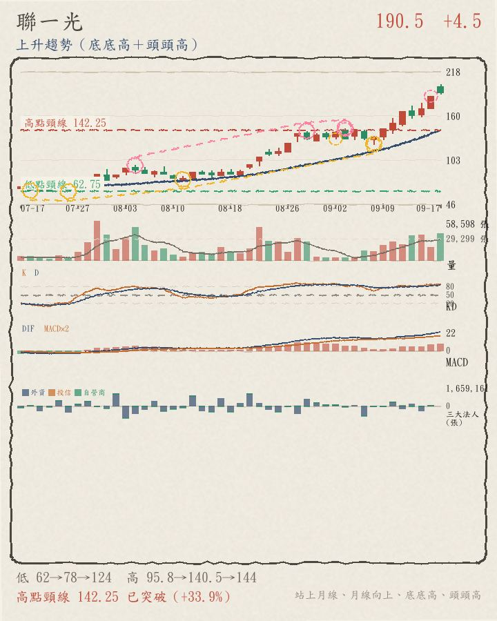
12:30 盤中 190.5（+2.42%），比加權指數強 1.08 個百分點、站上月線 137.215，已突破頸線 144，轉折結構仍是底底高＋頭頭高。
- 月線位置：現價 190.5 在月線 137.215 之上（+38.8%）；5 日線 166.6 也在月線之上（短均在上）；月線向上
- 量能：以已過交易時間推估，今天成交量約是 20 日均量的 2.55 倍（爆量），比 20 日均量大不少；上漲又量增，量價配合
- 關鍵價位：頸線 144 已站上；前一交易日高點 186（高於 2.4%）；今天盤中高點 201（低於 5.2%）；今天盤中低點 188.5（高於 1.1%）
- 轉折結構：低點 62.2、77.9、123.5 一路墊高、高點 95.8、140.5、144 也一路墊高，是底底高＋頭頭高；還沒確認的轉折低點 09-02 130、09-08 123.5；還沒確認的轉折高點 09-03 144、09-16 186（圖上虛線小圈）
環球晶 6488 上櫃
913 -24.0（-2.56%）
區間或轉弱 盤中成交值 72.67 億・全榜第 30 名（上櫃第 7 名）・相對大盤 -3.90
好條件 0/8：無
不好條件 6/8：今日下跌、相對大盤弱、在月線之下、量增下跌（出貨）、貼近今日低點（1% 內）、月線下彎
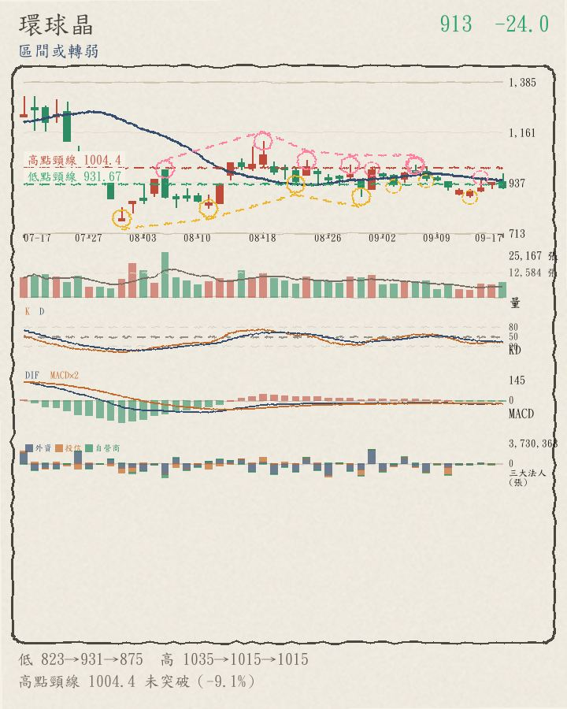
12:30 盤中 913（-2.56%），比加權指數弱 3.90 個百分點、跌破月線 951.75，離頸線 1035 還差 11.8%，轉折還沒走出明顯方向。
- 月線位置：現價 913 在月線 951.75 之下（-4.1%）；5 日線 914 也在月線之下（短均在下）；月線向下
- 量能：以已過交易時間推估，今天成交量約是 20 日均量的 1.23 倍（量增），比 20 日均量大不少；下跌卻量增，量價背離
- 關鍵價位：頸線 1035 還沒突破，差 11.8%；前一交易日高點 940（低於 2.9%）；今天盤中高點 977（低於 6.6%）；今天盤中低點 911（高於 0.2%）
- 轉折結構：低點 823、931、875 與高點 1035、1015、1015 都沒有明顯遞增，屬於區間震盪或轉弱；還沒確認的轉折低點 09-08 944、09-14 872；還沒確認的轉折高點 09-07 1015、09-15 959（圖上虛線小圈）
量增
↑ 回上方清單
奇鋐 3017 上市
3220 +45.0（+1.42%）
上升趨勢（底底高＋頭頭高） 盤中成交值 71.29 億・全榜第 31 名（上市第 24 名）・相對大盤 +0.08
好條件 4/8：月線向上、底底高、頭頭高、相對大盤強
不好條件 2/8：跌破前低、在月線之下
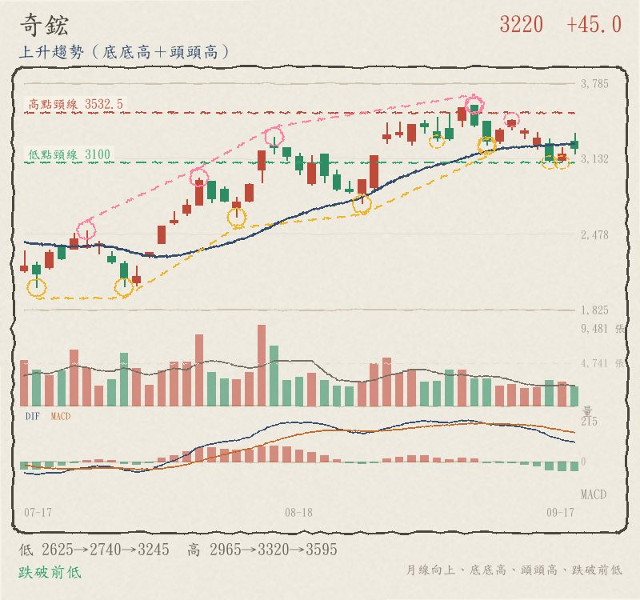
12:30 盤中 3220（+1.42%），比加權指數強 0.08 個百分點、跌破月線 3252，離頸線 3595 還差 10.4%，轉折結構仍是底底高＋頭頭高。
- 月線位置：現價 3220 在月線 3252 之下（-1.0%）；5 日線 3286 也在月線之上（短均在上）；月線向上
- 量能：以已過交易時間推估，今天成交量約是 20 日均量的 0.88 倍（量平），比 20 日均量少一些
- 關鍵價位：已跌破前一個轉折低點；頸線 3595 還在現價上方 10.4%；前一交易日高點 3225（低於 0.2%）；今天盤中高點 3350（低於 3.9%）；今天盤中低點 3175（高於 1.4%）
- 轉折結構：低點 2625、2740、3245 一路墊高、高點 2965、3320、3595 也一路墊高，是底底高＋頭頭高；還沒確認的轉折低點 09-15 3100、09-16 3100；還沒確認的轉折高點 09-07 3595、09-10 3470（圖上虛線小圈）
雙鴻 3324 上櫃
1345 -15.0（-1.10%）
區間或轉弱 盤中成交值 69.01 億・全榜第 32 名（上櫃第 8 名）・相對大盤 -2.44
好條件 2/8：站上月線、月線向上
不好條件 4/8：今日下跌、相對大盤弱、量增下跌（出貨）、貼近今日低點（1% 內）
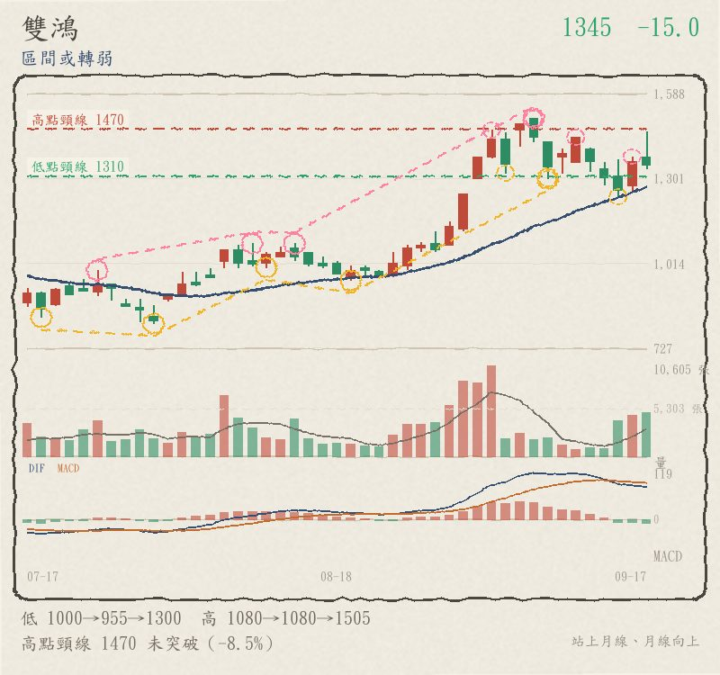
12:30 盤中 1345（-1.10%），比加權指數弱 2.44 個百分點、站上月線 1255.1，離頸線 1505 還差 10.6%，轉折還沒走出明顯方向。
- 月線位置：現價 1345 在月線 1255.1 之上（+7.2%）；5 日線 1345 也在月線之上（短均在上）；月線向上
- 量能：以已過交易時間推估，今天成交量約是 20 日均量的 1.92 倍（爆量），比 20 日均量大不少；下跌卻量增，量價背離
- 關鍵價位：頸線 1505 還沒突破，差 10.6%；前一交易日高點 1375（低於 2.2%）；今天盤中高點 1460（低於 7.9%）；今天盤中低點 1335（高於 0.7%）
- 轉折結構：低點 1000、955、1300 與高點 1080、1080、1505 都沒有明顯遞增，屬於區間震盪或轉弱；還沒確認的轉折低點 09-08 1300、09-15 1240；還沒確認的轉折高點 09-10 1440、09-16 1375（圖上虛線小圈）
南電 8046 上市
1085 -20.0（-1.81%）
區間或轉弱 盤中成交值 68.25 億・全榜第 33 名（上市第 25 名）・相對大盤 -3.15
好條件 0/8：無
不好條件 4/8：今日下跌、相對大盤弱、在月線之下、月線下彎
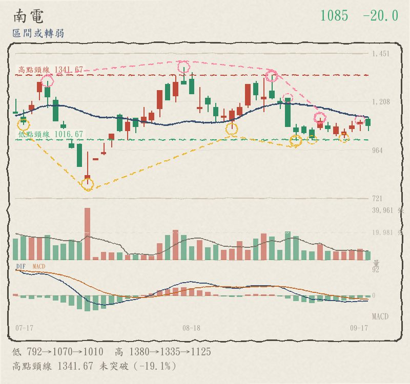
12:30 盤中 1085（-1.81%），比加權指數弱 3.15 個百分點、跌破月線 1135.5，離頸線 1335 還差 18.7%，轉折還沒走出明顯方向。
- 月線位置：現價 1085 在月線 1135.5 之下（-4.5%）；5 日線 1079 也在月線之下（短均在下）；月線向下
- 量能：以已過交易時間推估，今天成交量約是 20 日均量的 0.72 倍（量平），比 20 日均量少很多
- 關鍵價位：頸線 1335 還沒突破，差 18.7%；前一交易日高點 1115（低於 2.7%）；今天盤中高點 1130（低於 4.0%）；今天盤中低點 1060（高於 2.4%）
- 轉折結構：低點 792、1070、1010 與高點 1380、1335、1125 都沒有明顯遞增，屬於區間震盪或轉弱；還沒確認的轉折低點 09-08 1015、09-14 1025；還沒確認的轉折高點 09-09 1125、09-16 1115（圖上虛線小圈）
量平
↑ 回上方清單
聯鈞 3450 上市
523 -18.0（-3.33%）
高點墊高、底部不穩 盤中成交值 68.1 億・全榜第 34 名（上市第 26 名）・相對大盤 -4.67
好條件 1/8：頭頭高
不好條件 6/8：今日下跌、相對大盤弱、在月線之下、量增下跌（出貨）、貼近今日低點（1% 內）、月線下彎
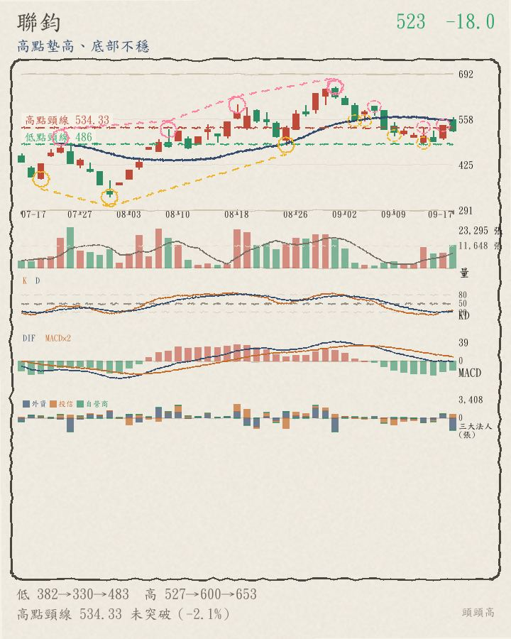
12:30 盤中 523（-3.33%），比加權指數弱 4.67 個百分點、跌破月線 557.375，離頸線 600 還差 12.8%，高點還在墊高（但底部沒同步墊高）。
- 月線位置：現價 523 在月線 557.375 之下（-6.2%）；5 日線 515.5 也在月線之下（短均在下）；月線向下
- 量能：以已過交易時間推估，今天成交量約是 20 日均量的 1.64 倍（爆量），比 20 日均量大不少；下跌卻量增，量價背離
- 關鍵價位：頸線 600 還沒突破，差 12.8%；前一交易日高點 541（低於 3.3%）；今天盤中高點 564（低於 7.3%）；今天盤中低點 521（高於 0.4%）
- 轉折結構：高點 527、600、653 墊高（頭頭高），但低點 382.5、330、483 沒有同步墊高；還沒確認的轉折低點 09-09 510、09-14 489；還沒確認的轉折高點 09-14 535、09-16 541（圖上虛線小圈）
信昌電 6173 上櫃
301.5 -13.5（-4.29%）
上升趨勢（底底高＋頭頭高） 盤中成交值 59.57 億・全榜第 35 名（上櫃第 9 名）・相對大盤 -5.63
好條件 5/8：站上月線、月線向上、底底高、頭頭高、突破頸線
不好條件 4/8：今日下跌、相對大盤弱、量增下跌（出貨）、貼近今日低點（1% 內）
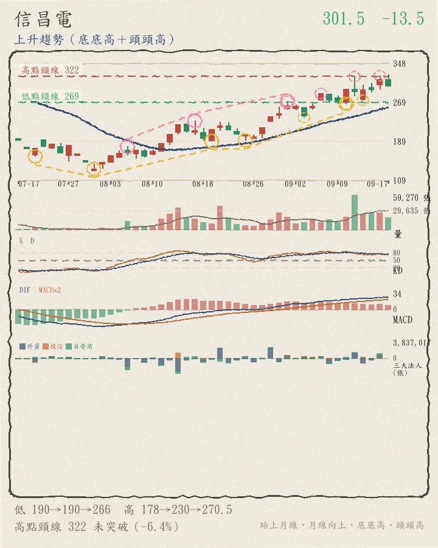
12:30 盤中 301.5（-4.29%），比加權指數弱 5.63 個百分點、站上月線 254，已突破頸線 270.5，轉折結構仍是底底高＋頭頭高。
- 月線位置：現價 301.5 在月線 254 之上（+18.7%）；5 日線 297.6 也在月線之上（短均在上）；月線向上
- 量能：以已過交易時間推估，今天成交量約是 20 日均量的 1.31 倍（量增），比 20 日均量大不少；下跌卻量增，量價背離
- 關鍵價位：頸線 270.5 已站上；前一交易日高點 323（低於 6.7%）；今天盤中高點 325（低於 7.2%）；今天盤中低點 301（高於 0.2%）
- 轉折結構：低點 189.5、190.5、265.5 一路墊高、高點 178、230、270.5 也一路墊高，是底底高＋頭頭高；還沒確認的轉折低點 09-10 265.5、09-14 272.5；還沒確認的轉折高點 09-11 321、09-16 323（圖上虛線小圈）
力積電 6770 上市
71.4 +1.5（+2.15%）
上升趨勢（底底高＋頭頭高） 盤中成交值 54.8 億・全榜第 36 名（上市第 27 名）・相對大盤 +0.81
好條件 5/8：站上月線、底底高、頭頭高、相對大盤強、守住今日高檔（距今日高點 1% 內）
不好條件 1/8：月線下彎
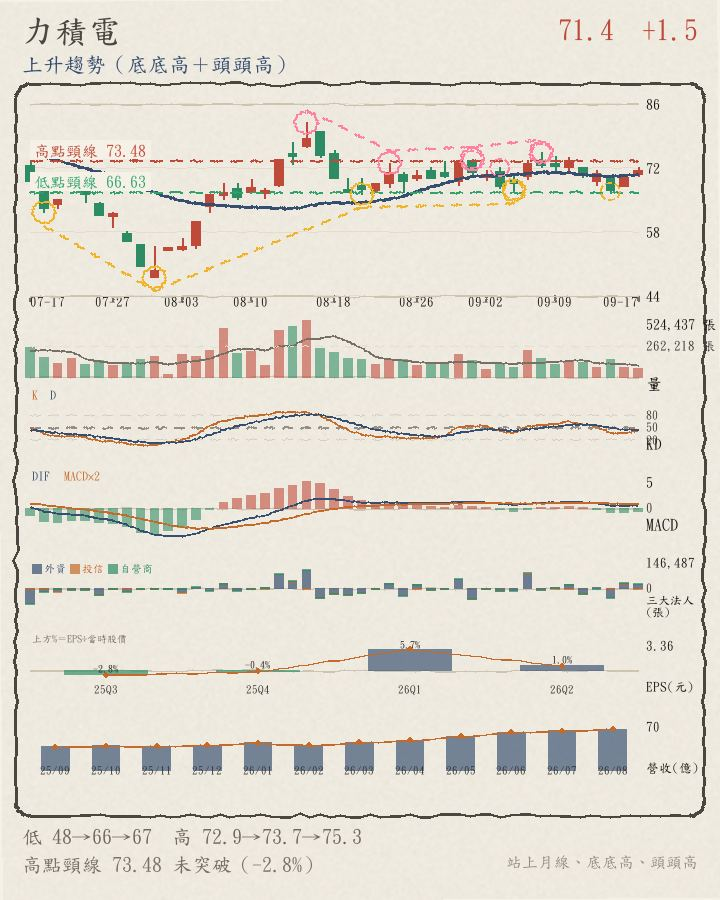
12:30 盤中 71.4（+2.15%），比加權指數強 0.81 個百分點、站上月線 70.26，離頸線 73.7 還差 3.1%，轉折結構仍是底底高＋頭頭高。
- 月線位置：現價 71.4 在月線 70.26 之上（+1.6%）；5 日線 70.34 也在月線之上（短均在上）；月線向下
- 量能：以已過交易時間推估，今天成交量約是 20 日均量的 0.70 倍（量縮），比 20 日均量少很多；上漲但量縮，量價背離
- 關鍵價位：頸線 73.7 還沒突破，差 3.1%；前一交易日高點 70（高於 2.0%）；今天盤中高點 72（低於 0.8%）；今天盤中低點 70.1（高於 1.9%）
- 轉折結構：低點 48、66.2、67 一路墊高、高點 72.9、73.7、75.3 也一路墊高，是底底高＋頭頭高；還沒確認的轉折低點 09-04 67、09-15 66.7；還沒確認的轉折高點 09-03 72、09-08 75.3（圖上虛線小圈）
貿聯-KY 3665 上市
2030 +35.0（+1.75%）
區間或轉弱 盤中成交值 53.35 億・全榜第 37 名（上市第 28 名）・相對大盤 +0.41
好條件 2/8：相對大盤強、攻擊量（量增＋上漲）
不好條件 2/8：在月線之下、月線下彎
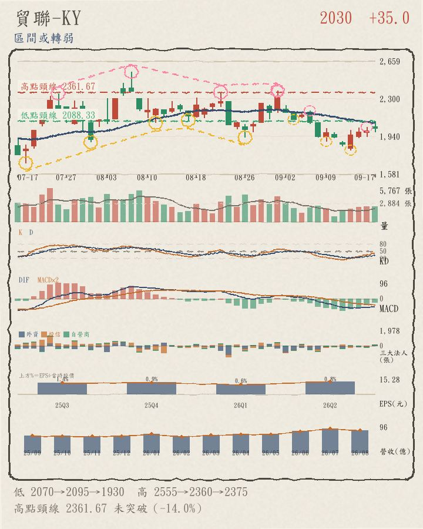
12:30 盤中 2030（+1.75%），比加權指數強 0.41 個百分點、跌破月線 2079.25，離頸線 2360 還差 14.0%，轉折還沒走出明顯方向。
- 月線位置：現價 2030 在月線 2079.25 之下（-2.4%）；5 日線 1947 也在月線之下（短均在下）；月線向下
- 量能：以已過交易時間推估，今天成交量約是 20 日均量的 1.26 倍（量增），比 20 日均量大不少；上漲又量增，量價配合
- 關鍵價位：頸線 2360 還沒突破，差 14.0%；前一交易日高點 2030（高於 0.0%）；今天盤中高點 2085（低於 2.6%）；今天盤中低點 1985（高於 2.3%）
- 轉折結構：低點 2070、2095、1930 與高點 2555、2360、2375 都沒有明顯遞增，屬於區間震盪或轉弱；還沒確認的轉折低點 09-09 1890、09-14 1810；還沒確認的轉折高點 09-07 2185、09-16 2030（圖上虛線小圈）
量增
↑ 回上方清單
合晶 6182 上櫃
111 -1.0（-0.89%）
區間或轉弱 盤中成交值 52.61 億・全榜第 38 名（上櫃第 10 名）・相對大盤 -2.23
好條件 1/8：站上月線
不好條件 5/8：今日下跌、相對大盤弱、量增下跌（出貨）、貼近今日低點（1% 內）、月線下彎
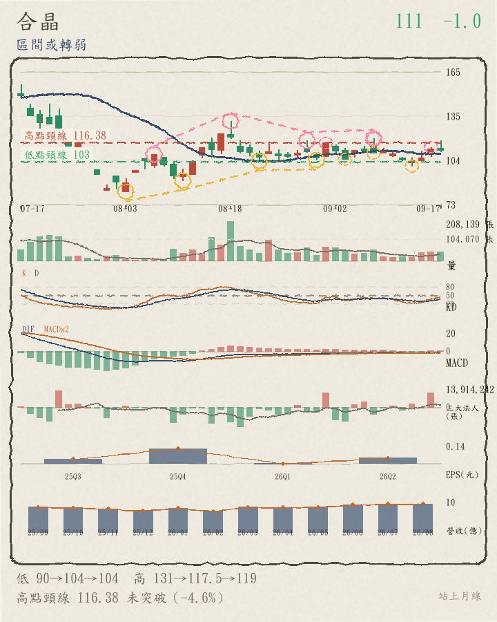
12:30 盤中 111（-0.89%），比加權指數弱 2.23 個百分點、站上月線 108.6，離頸線 117.5 還差 5.5%，轉折還沒走出明顯方向。
- 月線位置：現價 111 在月線 108.6 之上（+2.2%）；5 日線 106.8 也在月線之下（短均在下）；月線向下
- 量能：以已過交易時間推估，今天成交量約是 20 日均量的 1.28 倍（量增），比 20 日均量大不少；下跌卻量增，量價背離
- 關鍵價位：頸線 117.5 還沒突破，差 5.5%；前一交易日高點 113（低於 1.8%）；今天盤中高點 117.5（低於 5.5%）；今天盤中低點 110（高於 0.9%）
- 轉折結構：低點 89.8、103.5、104 與高點 131、117.5、119 都沒有明顯遞增，屬於區間震盪或轉弱；還沒確認的轉折低點 09-08 109、09-14 100；還沒確認的轉折高點 09-08 119、09-16 113（圖上虛線小圈）
華通 2313 上市
220 -5.0（-2.22%）
底部墊高、未過前高 盤中成交值 51.6 億・全榜第 39 名（上市第 29 名）・相對大盤 -3.56
好條件 2/8：月線向上、底底高
不好條件 4/8：今日下跌、相對大盤弱、在月線之下、貼近今日低點（1% 內）
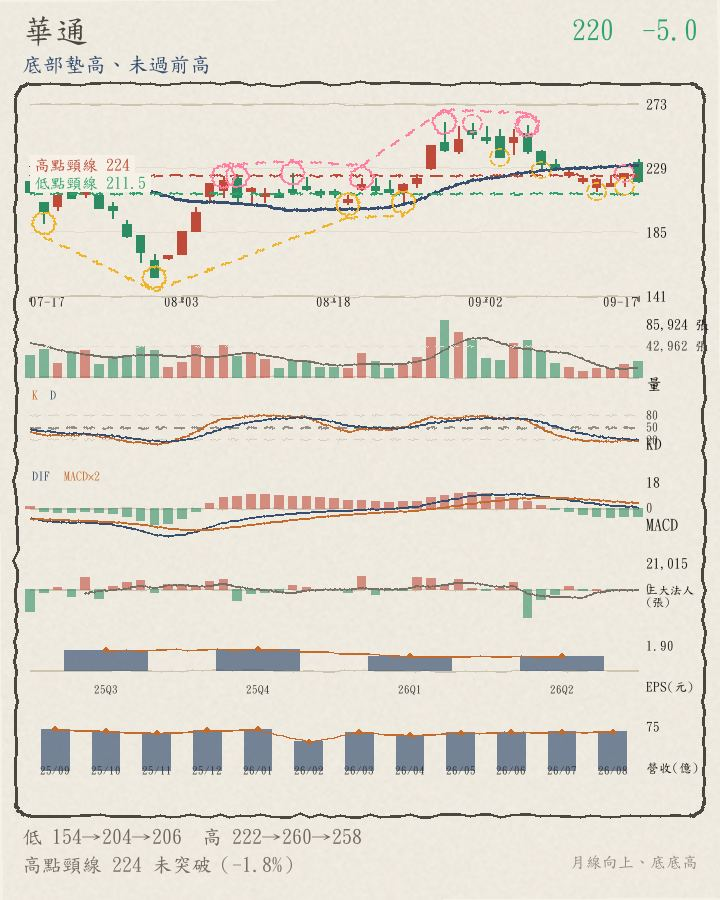
12:30 盤中 220（-2.22%），比加權指數弱 3.56 個百分點、跌破月線 230.675，離頸線 222 還差 0.9%，底部還在墊高（但高點沒同步創高）。
- 月線位置：現價 220 在月線 230.675 之下（-4.6%）；5 日線 222.3 也在月線之下（短均在下）；月線向上
- 量能：以已過交易時間推估，今天成交量約是 20 日均量的 0.90 倍（量平），比 20 日均量少一些
- 關鍵價位：頸線 222 還沒突破，差 0.9%；前一交易日高點 225（低於 2.2%）；今天盤中高點 235（低於 6.4%）；今天盤中低點 219（高於 0.5%）
- 轉折結構：低點 154、204、205.5 墊高（底底高），但高點 222、260、258 沒有同步創高；還沒確認的轉折低點 09-14 213、09-16 216；還沒確認的轉折高點 09-07 258、09-16 225（圖上虛線小圈）
群創 3481 上市
48.9 +0.2（+0.41%）
底部墊高、未過前高 盤中成交值 50.74 億・全榜第 40 名（上市第 30 名）・相對大盤 -0.93
好條件 2/8：站上月線、底底高
不好條件 3/8：相對大盤弱、貼近今日低點（1% 內）、月線下彎
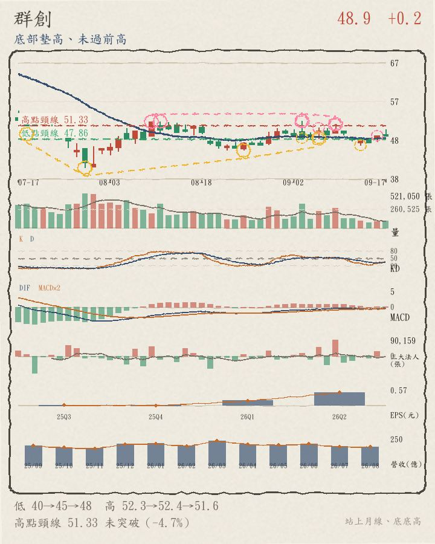
12:30 盤中 48.9（+0.41%），比加權指數弱 0.93 個百分點、站上月線 47.97，離頸線 52.4 還差 6.7%，底部還在墊高（但高點沒同步創高）。
- 月線位置：現價 48.9 在月線 47.97 之上（+1.9%）；5 日線 48.04 也在月線之上（短均在上）；月線向下
- 量能：以已過交易時間推估，今天成交量約是 20 日均量的 0.72 倍（量平），比 20 日均量少很多；上漲但量縮，量價背離
- 關鍵價位：頸線 52.4 還沒突破，差 6.7%；前一交易日高點 48.7（高於 0.4%）；今天盤中高點 50.2（低於 2.6%）；今天盤中低點 48.55（高於 0.7%）
- 轉折結構：低點 40.5、44.95、48 墊高（底底高），但高點 52.3、52.4、51.6 沒有同步創高；還沒確認的轉折低點 09-07 48、09-14 46.25；還沒確認的轉折高點 09-09 51.6、09-16 48.7（圖上虛線小圈）
宏致 3605 上市
141 +1.0（+0.71%）
底部墊高、未過前高 盤中成交值 50.71 億・全榜第 41 名（上市第 31 名）・相對大盤 -0.63
好條件 4/8：站上月線、月線向上、底底高、攻擊量（量增＋上漲）
不好條件 1/8：相對大盤弱
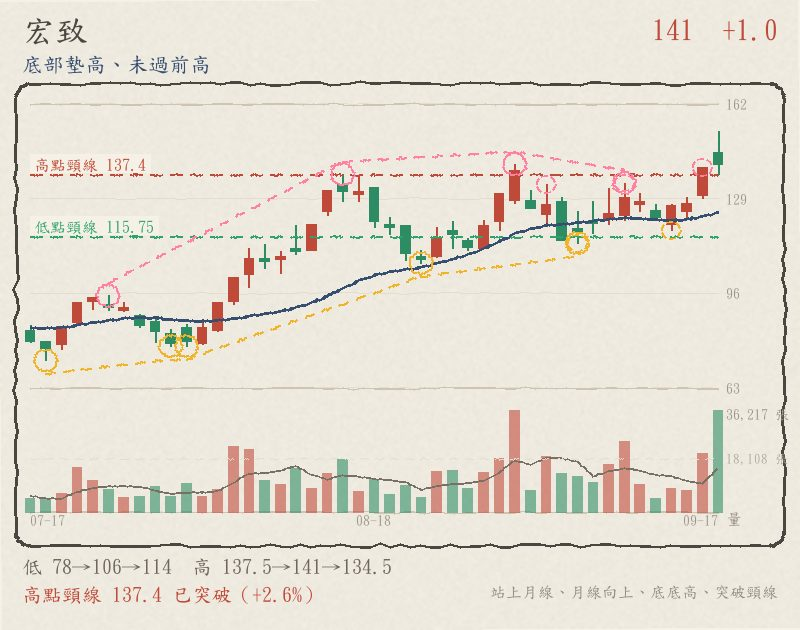
12:30 盤中 141（+0.71%），比加權指數弱 0.63 個百分點、站上月線 122.775，離頸線 141 還差 0.0%，底部還在墊高（但高點沒同步創高）。
- 月線位置：現價 141 在月線 122.775 之上（+14.8%）；5 日線 128.9 也在月線之上（短均在上）；月線向上
- 量能：以已過交易時間推估，今天成交量約是 20 日均量的 3.50 倍（爆量），比 20 日均量大不少；上漲又量增，量價配合
- 關鍵價位：頸線 141 還沒突破，差 0.0%；前一交易日高點 140（高於 0.7%）；今天盤中高點 152.5（低於 7.5%）；今天盤中低點 137.5（高於 2.5%）
- 轉折結構：低點 77.5、106.5、113.5 墊高（底底高），但高點 137.5、141、134.5 沒有同步創高；還沒確認的轉折低點 09-04 113.5、09-14 118；還沒確認的轉折高點 09-09 134.5、09-16 140（圖上虛線小圈）
鴻海 2317 上市
252 +4.0（+1.61%）
區間或轉弱 盤中成交值 50.04 億・全榜第 42 名（上市第 32 名）・相對大盤 +0.27
好條件 3/8：站上月線、相對大盤強、守住今日高檔（距今日高點 1% 內）
不好條件 2/8：貼近今日低點（1% 內）、月線下彎
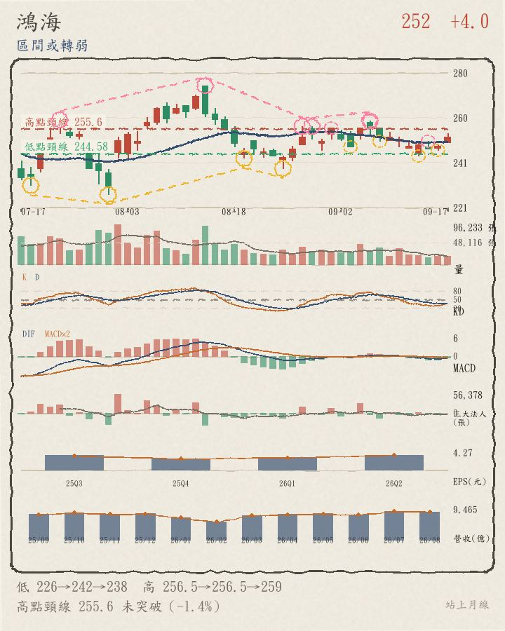
12:30 盤中 252（+1.61%），比加權指數強 0.27 個百分點、站上月線 249.6，離頸線 259 還差 2.7%，轉折還沒走出明顯方向。
- 月線位置：現價 252 在月線 249.6 之上（+1.0%）；5 日線 248.4 也在月線之下（短均在下）；月線向下
- 量能：以已過交易時間推估，今天成交量約是 20 日均量的 0.86 倍（量平），比 20 日均量少一些
- 關鍵價位：頸線 259 還沒突破，差 2.7%；前一交易日高點 248.5（高於 1.4%）；今天盤中高點 253.5（低於 0.6%）；今天盤中低點 249.5（高於 1.0%）
- 轉折結構：低點 226.5、242.5、238 與高點 256.5、256.5、259 都沒有明顯遞增，屬於區間震盪或轉弱；還沒確認的轉折低點 09-14 243.5、09-16 246；還沒確認的轉折高點 09-07 259、09-15 250（圖上虛線小圈）
智邦 2345 上市
1810 -30.0（-1.63%）
區間或轉弱 盤中成交值 49.88 億・全榜第 43 名（上市第 33 名）・相對大盤 -2.97
好條件 0/8：無
不好條件 7/8：跌破前低、今日下跌、相對大盤弱、在月線之下、量增下跌（出貨）、跌破昨日低點、月線下彎
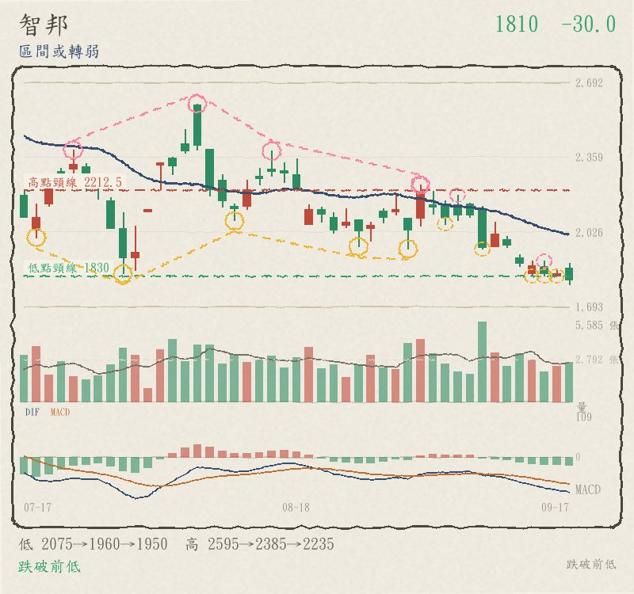
12:30 盤中 1810（-1.63%），比加權指數弱 2.97 個百分點、跌破月線 2027.75，離頸線 2235 還差 19.0%，轉折還沒走出明顯方向。
- 月線位置：現價 1810 在月線 2027.75 之下（-10.7%）；5 日線 1881 也在月線之下（短均在下）；月線向下
- 量能：以已過交易時間推估，今天成交量約是 20 日均量的 1.20 倍（量增），比 20 日均量大不少；下跌卻量增，量價背離
- 關鍵價位：已跌破前一個轉折低點；頸線 2235 還在現價上方 19.0%；前一交易日高點 1860（低於 2.7%）；今天盤中高點 1885（低於 4.0%）；今天盤中低點 1790（高於 1.1%）
- 轉折結構：低點 2075、1960、1950 與高點 2595、2385、2235 都沒有明顯遞增，屬於區間震盪或轉弱；還沒確認的轉折低點 09-15 1830、09-16 1830；還沒確認的轉折高點 09-04 2190、09-15 1895（圖上虛線小圈）
鴻勁 7769 上市
6220 +95.0（+1.55%）
區間或轉弱 盤中成交值 48.83 億・全榜第 44 名（上市第 34 名）・相對大盤 +0.21
好條件 2/8：相對大盤強、攻擊量（量增＋上漲）
不好條件 3/8：在月線之下、貼近今日低點（1% 內）、月線下彎
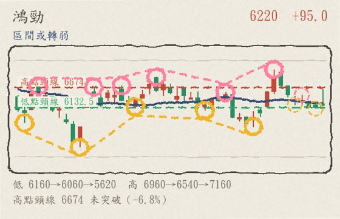
12:30 盤中 6220（+1.55%），比加權指數強 0.21 個百分點、跌破月線 6269.5，離頸線 6540 還差 4.9%，轉折還沒走出明顯方向。
- 月線位置：現價 6220 在月線 6269.5 之下（-0.8%）；5 日線 6270 也在月線之上（短均在上）；月線向下
- 量能：以已過交易時間推估，今天成交量約是 20 日均量的 1.58 倍（爆量），比 20 日均量大不少；上漲又量增，量價配合
- 關鍵價位：頸線 6540 還沒突破，差 4.9%；前一交易日高點 6235（低於 0.2%）；今天盤中高點 6615（低於 6.0%）；今天盤中低點 6180（高於 0.6%）
- 轉折結構：低點 6160、6060、5620 與高點 6960、6540、7160 都沒有明顯遞增，屬於區間震盪或轉弱；還沒確認的轉折低點 09-11 6210、09-16 6100；還沒確認的轉折高點 09-08 7160、09-14 6470（圖上虛線小圈）
日月光投控 3711 上市
617 +12.0（+1.98%）
區間或轉弱 盤中成交值 48.39 億・全榜第 45 名（上市第 35 名）・相對大盤 +0.64
好條件 3/8：站上月線、月線向上、相對大盤強
不好條件 1/8：貼近今日低點（1% 內）
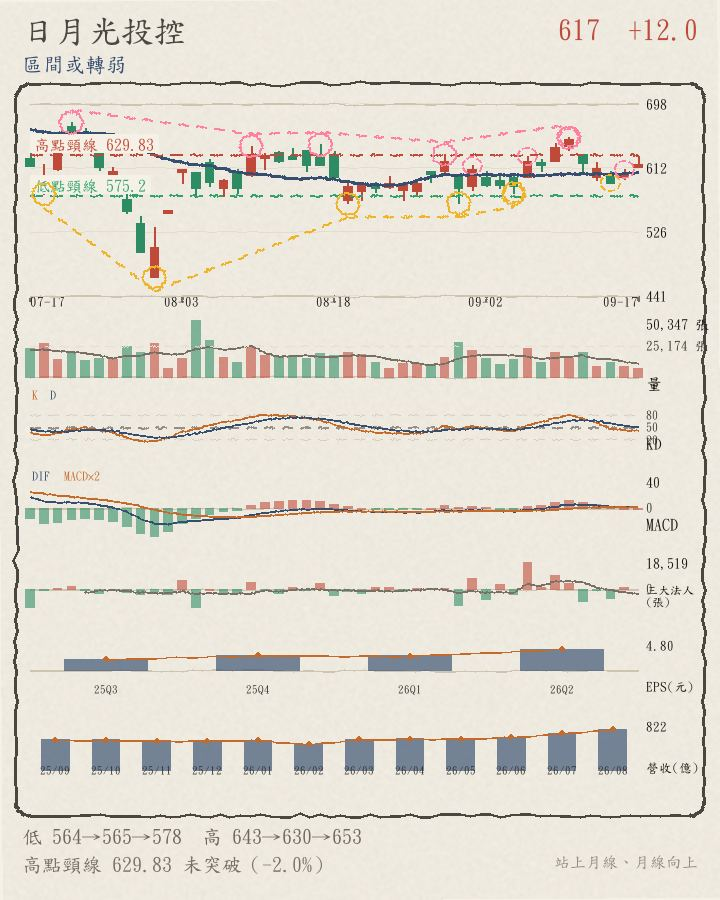
12:30 盤中 617（+1.98%），比加權指數強 0.64 個百分點、站上月線 604.7，離頸線 653 還差 5.5%，轉折還沒走出明顯方向。
- 月線位置：現價 617 在月線 604.7 之上（+2.0%）；5 日線 615.4 也在月線之上（短均在上）；月線向上
- 量能：以已過交易時間推估，今天成交量約是 20 日均量的 0.61 倍（量縮），比 20 日均量少很多；上漲但量縮，量價背離
- 關鍵價位：頸線 653 還沒突破，差 5.5%；前一交易日高點 610（高於 1.1%）；今天盤中高點 628（低於 1.8%）；今天盤中低點 613（高於 0.7%）
- 轉折結構：低點 564、565、578 與高點 643、630、653 都沒有明顯遞增，屬於區間震盪或轉弱；還沒確認的轉折低點 09-04 578、09-15 592；還沒確認的轉折高點 09-10 653、09-16 610（圖上虛線小圈）
精材 3374 上櫃
432 +8.0（+1.89%）
高點墊高、底部不穩 盤中成交值 46.38 億・全榜第 46 名（上櫃第 11 名）・相對大盤 +0.55
好條件 5/8：站上月線、月線向上、頭頭高、突破頸線、相對大盤強
不好條件 0/8：無
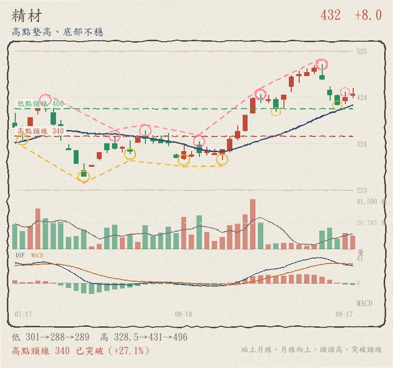
12:30 盤中 432（+1.89%），比加權指數強 0.55 個百分點、站上月線 401.2，已突破頸線 328.5，高點還在墊高（但底部沒同步墊高）。
- 月線位置：現價 432 在月線 401.2 之上（+7.7%）；5 日線 442.7 也在月線之上（短均在上）；月線向上
- 量能：以已過交易時間推估，今天成交量約是 20 日均量的 1.02 倍（量平），跟 20 日均量差不多
- 關鍵價位：頸線 328.5 已站上；前一交易日高點 436（低於 0.9%）；今天盤中高點 445（低於 2.9%）；今天盤中低點 423（高於 2.1%）
- 轉折結構：高點 328.5、431、496 墊高（頭頭高），但低點 301、288、289 沒有同步墊高；還沒確認的轉折低點 09-03 393、09-15 407；還沒確認的轉折高點 09-11 496、09-16 436（圖上虛線小圈）
富喬 1815 上櫃
111.5 -7.0（-5.91%）
區間或轉弱 盤中成交值 46.31 億・全榜第 47 名（上櫃第 12 名）・相對大盤 -7.25
好條件 2/8：月線向上、突破頸線
不好條件 5/8：今日下跌、相對大盤弱、在月線之下、貼近今日低點（1% 內）、跌破昨日低點
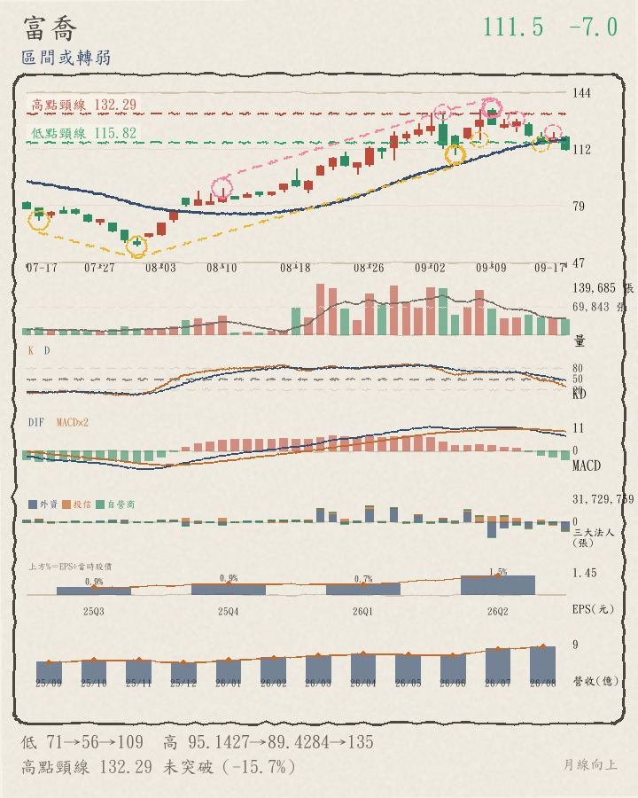
12:30 盤中 111.5（-5.91%），比加權指數弱 7.25 個百分點、跌破月線 116.887，已突破頸線 89.4284，轉折還沒走出明顯方向。
- 月線位置：現價 111.5 在月線 116.887 之下（-4.6%）；5 日線 121.3 也在月線之上（短均在上）；月線向上
- 量能：以已過交易時間推估，今天成交量約是 20 日均量的 0.64 倍（量縮），比 20 日均量少很多
- 關鍵價位：頸線 89.4284 已站上；前一交易日高點 121.5（低於 8.2%）；今天盤中高點 119.5（低於 6.7%）；今天盤中低點 111（高於 0.5%）
- 轉折結構：低點 70.857、56.2856、108.571 與高點 95.1427、89.4284、135 都沒有明顯遞增，屬於區間震盪或轉弱；還沒確認的轉折低點 09-08 117.143、09-15 114.5；還沒確認的轉折高點 09-11 129、09-16 121.5（圖上虛線小圈）
欣銓 3264 上櫃
242 +19.0（+8.52%）
上升趨勢（底底高＋頭頭高） 盤中成交值 43.14 億・全榜第 48 名（上櫃第 13 名）・相對大盤 +7.18
好條件 7/8：站上月線、月線向上、底底高、頭頭高、突破頸線、相對大盤強、攻擊量（量增＋上漲）
不好條件 0/8：無
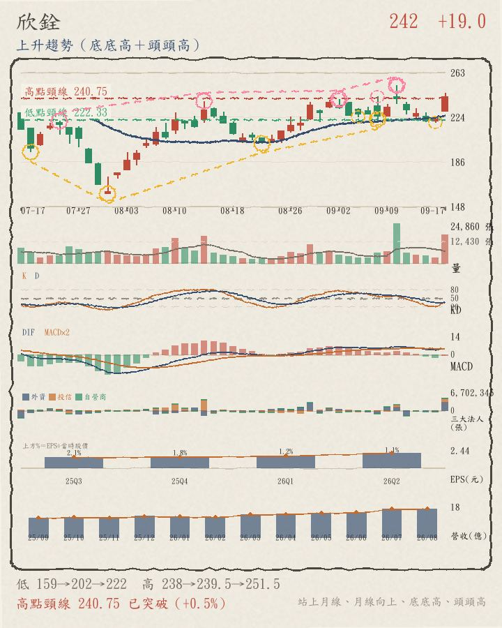
12:30 盤中 242（+8.52%），比加權指數強 7.18 個百分點、站上月線 224.05，已突破頸線 239.5，轉折結構仍是底底高＋頭頭高。
- 月線位置：現價 242 在月線 224.05 之上（+8.0%）；5 日線 228.4 也在月線之上（短均在上）；月線向上
- 量能：以已過交易時間推估，今天成交量約是 20 日均量的 3.74 倍（爆量），比 20 日均量大不少；上漲又量增，量價配合
- 關鍵價位：頸線 239.5 已站上；前一交易日高點 225.5（高於 7.3%）；今天盤中高點 245（低於 1.2%）；今天盤中低點 229.5（高於 5.4%）
- 轉折結構：低點 159、202、222.5 一路墊高、高點 238、239.5、251.5 也一路墊高，是底底高＋頭頭高；還沒確認的轉折低點 09-08 222.5、09-16 220；還沒確認的轉折高點 09-08 242、09-10 251.5（圖上虛線小圈）
群聯 8299 上櫃
1970 -15.0（-0.76%）
底部墊高、未過前高 盤中成交值 37.82 億・全榜第 49 名（上櫃第 14 名）・相對大盤 -2.10
好條件 1/8：底底高
不好條件 4/8：今日下跌、相對大盤弱、在月線之下、月線下彎
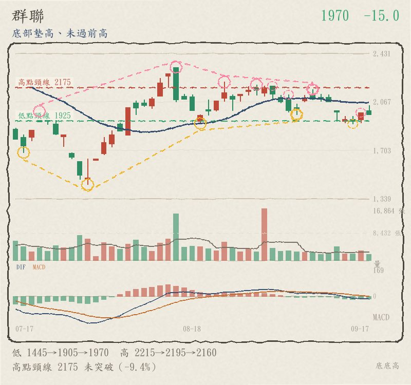
12:30 盤中 1970（-0.76%），比加權指數弱 2.10 個百分點、跌破月線 2062.5，離頸線 2215 還差 11.1%，底部還在墊高（但高點沒同步創高）。
- 月線位置：現價 1970 在月線 2062.5 之下（-4.5%）；5 日線 1979 也在月線之下（短均在下）；月線向下
- 量能：以已過交易時間推估，今天成交量約是 20 日均量的 0.63 倍（量縮），比 20 日均量少很多
- 關鍵價位：頸線 2215 還沒突破，差 11.1%；前一交易日高點 1985（低於 0.8%）；今天盤中高點 2040（低於 3.4%）；今天盤中低點 1970（高於 0.0%）
- 轉折結構：低點 1445、1905、1970 墊高（底底高），但高點 2215、2195、2160 沒有同步創高；還沒確認的轉折低點 09-04 1970、09-15 1900；還沒確認的轉折高點 09-08 2160、09-16 1985（圖上虛線小圈）
世界 5347 上櫃
165.5 +7.5（+4.75%）
高點墊高、底部不穩 盤中成交值 36.78 億・全榜第 50 名（上櫃第 15 名）・相對大盤 +3.41
好條件 5/8：站上月線、頭頭高、突破頸線、相對大盤強、攻擊量（量增＋上漲）
不好條件 1/8：月線下彎
12:30 盤中 165.5（+4.75%），比加權指數強 3.41 個百分點、站上月線 153.425，已突破頸線 158，高點還在墊高（但底部沒同步墊高）。
- 月線位置：現價 165.5 在月線 153.425 之上（+7.9%）；5 日線 157.9 也在月線之上（短均在上）；月線向下
- 量能：以已過交易時間推估，今天成交量約是 20 日均量的 2.49 倍（爆量），比 20 日均量大不少；上漲又量增，量價配合
- 關鍵價位：頸線 158 已站上；前一交易日高點 158.5（高於 4.4%）；今天盤中高點 171.5（低於 3.5%）；今天盤中低點 159.5（高於 3.8%）
- 轉折結構：高點 157、158、163 墊高（頭頭高），但低點 147.5、146.5、147 沒有同步墊高；還沒確認的轉折低點 09-14 152.5、09-16 153；還沒確認的轉折高點 09-14 160、09-16 158.5（圖上虛線小圈）